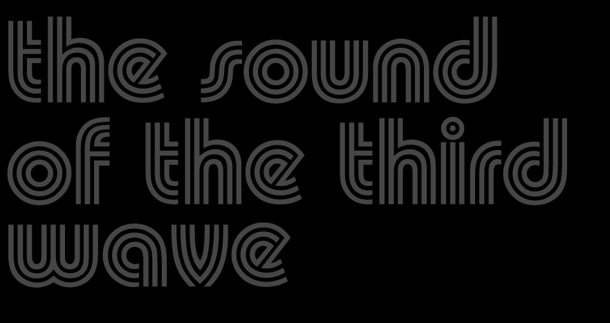

THE SOUND OF THE THIRD WAVE:
SCIENCE FICTION,
IMAGINARY MACHINES
AND
THE FUTURE OF TECHNO
A THESIS SUBMITTED TO THE FACULTY OF GRADUATE STUDIES
IN PARTIAL FULFILMENT OF THE REQUIREMENTS
FOR THE DEGREE OF
MASTER OF ARTS
GRADUATE PROGRAM IN MUSIC
YORK UNIVERSITY,
TORONTO, ONTARIO
ABSTRACT
Of all the musical genres of the present, from popular to academic, from mainstream to underground, it is Techno music, and all its subgenic offspring, that most conspicuously identifies itself with the ‘Futuristic.’ This thesis attempts to unveil this music’s construction as ‘Futuristic’ through a comparitive analysis of Techno composition and cinematic science fiction sound design. The process of forging sounds for a fictitious Future – the role of the science fiction film sound designer – is an apt analogical tool for deciphering meaning in this virtual machine music of the Third Wave, known as Techno. Many of the techniques and tools used in both science fiction sound design and the creation of contemporary Techno music are remarkably similar. Science fiction sound design seeks to make sounds for machines that do not exist – imaginary machines that soar unencumbered by reality across the silver screen. Modern digital Techno music such as ‘glitch’ and ‘microsound’ draws its sounds from machines that do not exist, at least not in the spatial sense – software simulacra that illuminate a computer screen. It is a link that few have made, and it may help explain why many present-day Techno subgenres sound the way they do, what they mean, and why, to certain ears, those sounds carry the signification of ‘Futuristic.’
TABLE OF CONTENTS
0.1 Prelude
1.1 Old Detroit
1.2 Delta City
1.3 Techno Rebels
1.4 “If This Is The Future, Why Is The Music So Crap?”
1.5 The Hidden Link
2.1 The Sound of The Second Wave
2.2 The March of The Machine
2.3 The Music Factory
2.4 The Art of Automation
3.1 The Seeds of Science Fiction
3.2 Imaginary Machines
3.3 The Sight of Cinema
3.4 A Glitch In The Machine
3.5 The Visual Futurists
4.1 The Sound of Silent Cinema
4.2 Hypersound
4.3 Retinal Intensities
4.4 The Sound of Science Fiction
5.1 The Sound of The Third Wave
5.2 CLICKS and CUTS
5.3 The Future of Techno
6.1 Postscript
7.1 Works Cited
0.1 PRELUDE
A script is not a film. Nor can a script be compared to a literary work, for a script is not authored with autonomy in mind. No matter how complete, a script defines itself by never being truly complete. It is a first stage, an inkling of an idea that might someday be transformed into light. And SOUND. A script is a skeleton, a framework for improvisation. It is the DNA of what a film might become.
A script is a blueprint. The first phase of a larger process. It needs to be made. It eludes and suggests. It hints at the cinematic. But it is not cinematic unto itself. A script is imagination in print, static and abstract, black typewriter text on a white page, stapled and bound. A script is film, with the details left out. A story without pictures, a story without SOUND.
A good script begs interpretation. It is open-ended and open-minded. It asks the help of others. It is a contract for collaboration. It wants to jam. But despite all this, a script adheres to convention. The content may change but the format is fixed. Margins are measured to a fraction of an inch and text is anchored to an invisible grid. Dialogue is centred and scenes are sequestered. And SOUND is marked in CAPITAL LETTERS.
It is in this spirit that this thesis is written. Think of it as the script to an imaginary documentary that plays in the mind’s eye of the reader. Block quotations are eschewed in favour of a more fluid style, in which the expert testimonies of others effortlessly crossfade into the VOICEOVER commentary of its author, and back again.
Writing about sound can be exasperating. Especially when the reader may have no aural memory or idiomatic familiarity with the kinds of sounds and musical styles to which the author refers. The comic book lexicon of CAPITALIZED monosyllabic onomatopoeia that populates this work can hope to articulate only a small fraction of the sheer complexity and aural intoxication of these kinds of Futuristic sounds. So instead, this study concentrates on the mindset and creative process of the modern Techno musician by drawing analogies to the art of cinematic science fiction sound design, and its various key films, which are undoubtedly more familiar to most readers than the subterranean Techno subgenres of Glitch, IDM, or Microsound.
It is the author’s sincere hope that this work will place the relatively unsung art of cinematic and industrial sound design within an overarching musical continuum that begins with the Italian Futurists at the dawn of the last century. Additionally, it is the author’s goal to illustrate the remarkable similarities between the sorts of sounds used in modern Techno music and those conjured by science fiction cinematic sound designers in their attempt to imagine the Future through sound. The parallels are too uncanny to resist investigation, especially considering the dearth of academic material linking these two aesthetic discourses.
The unconventional, lateral and nonlinear approach to this exploration of Futurism, sound and meaning draws from a number of seemingly disparate sources, often engaging topics in an ostensibly roundabout nature. Chapters begin in a kind of poetic perplexity, leaving readers wondering where these lengthy passages of alliteration might lead. Patience is key here, as the cryptic inevitably unravels into cohesive thought, as the lens zooms ever inward. It is the author’s adamant belief that the paradigm shifts that are now occurring in digital art and culture can only be fully understood within a broader context of technology, civilization and history as a whole. Accordingly, Alvin Toffler’s key work acts as both inspiration and impetus for this interconnected inquiry into the nature and meaning of musical sound in this Third Wave.
Chapter One begins with a deconstruction of the automobile as the quintessential symbol of the apex of Industrial society. The fall of Detroit in the last quarter of the century, however, points toward the emergence of a nascent post-industrial economy, in which the automobile will be supplanted by the personal computer as the primary ‘vehicle’ for traversing the unknown and articulating the individuality, empowerment and freedom once associated with car culture. The ‘space’ now traversed by the computer user begins to take on some of the qualities of its corporeal counterpart, as the virtual conduits of cyberspace become likened to a kind of metaphorical information ‘superhighway.’
For several enlightened musicians born in Detroit at this turning of the tides, the way forward was obvious. The ‘Second Wave’ Industrial economy was unsustainable, exemplified by the detrioration of Detroit, and if one were to survive the tumultuous transition into this uncertain Future – especially as a progressive artist – computer power, automation, and new forms of Underground Resistance would have to be harnessed in a post-industrial ‘Third Wave’ economy no longer rooted in physical capital.
Chapter Two shuttles backwards to the beginnings of Fordism and outlines the Italian Futurists’ fetish with all things technological, especially the automobile. The Futurists had imagined a new kind of music made possible by machine power, automation, and the intriguing new palette of dissonant ‘noise-sounds,’ thunderous volumes, and rigid rhythms these machines were capable of producing. Not all were as enthusiastic about the mechanization of art, however. The same assembly-line logic that had been applied to the factory floor soon found its way into the embryonic recording arts, in the form of photography, phonography and cinematography, and several key theorists became troubled about the shifting loci of authenticity and the ‘decay of aura’ in the work of art in an age of mechanical reproduction.
Chapter Three charts the origins and growth of science fiction as an autonomous literary genre and exposes its first foray into early narrative filmmaking as more than mere coincidence. It is here that the concept of the Glitch is introduced, that fortuitous mechanical error that so often leads aesthetic and intellectual innovation in the arts and sciences down the most unpredictable of paths.
Chapter Four investigates and synthesizes the ideas of postmodern philosopher Jean Baudrillard and film sound theorist Michel Chion, using their concept of hyperreality, or what Chion calls ‘rendered sound,’ as a tool for understanding the idiomatic operation of Techno music, the virtual ‘space’ it occupies, and, ultimately, its construction as Futuristic.
Finally, Chapter Five is an overview of the current state of Futuristic music, introducing readers to the Techno subgenres of Microsound and Glitch.
This Prelude is meant only as a map to navigate the following text, and should not be considered part of it. For the sound of the Third Wave truly begins with the PULSE of an ELECTRIC HEART…
1.1 OLD DETROIT
The ELECTRIC PULSE of an artificial heart begins.
111 WHITE STATIC thunders through us. It sparkles and dances, almost alive. Now it fades, and
112 GRID OF GREEN LINES fills the screen and then snaps off.
113 COLOR BARS pop on. The colors change hue as the color balance is adjusted. VERTICAL HOLD goes out. Someone says, “Shit!” and shuts us down. BLACK.
114 SNAP! We’re inside a complex laboratory. TECHNICIANS hover around us. The world goes from black and white to color. “Are we locked in?” A Technician peers in. SNAP! BLACK.
115 SOUND, then CLICK, we’re on again: Technicians and SCIENTISTS stand around. Morton gives us a cool, paternal look. Johnson stands behind him.
Excerpt from RoboCop script
By Edward Neumier and Michael Miner
Detroit is, in essence, a science fiction city. It slumps like a concrete beacon on an embankment of polluted water, heralding the dawn of a new era through its own decay. Vacant skyscrapers and empty streets, derelict buildings and burnt out sedans, form a strange kind of post-apocalyptic memorial to the apex of a mighty Industrial Age that is leaving us as quickly as it came.
The automobile, that quintessentially American invention, once had its home here, along with all that it signified. It promised the Future, wiring the world in asphalt and overpasses, toll booths and off-ramps. It gave rise to a new kind of family and a new kind of home. The driveway, the drive-in, the drive-thru, the two-car garage, that endless labyrinth of identical houses engineered to mime community: this was the reality of Suburbia and the reorganization of life under the auspices of Fordism.
It was not long before this philosophy was superimposed upon all aspects of the workspace, weeding its way up from the factory floor to the uppermost tiers of management. Efficiency, specialization, and relentless productivity became the new mandates of modern capitalism, churning out consumer goods at an unprecedented rate. A new kind of culture began to emerge – a consumer culture – with the automobile as its shining star. Never before had a mass manufactured commodity been so identified with individuality, freedom and empowerment, all the while sucking the planet dry and shrouding its sky in poison.
As ground zero to one-half of the oil and automotive oligopoly that would eventually dominate the world, Detroit seemed almost predestined to be the first to feel the fallout of the Post-Industrial implosion that would follow. It would not be long before ‘Motor City’ found itself afloat among the torrents of a transformed world, vying battle with the insurgence of increasingly competitive European and Japanese automobile manufacturers. Soon downsizing and decentralization became the new prerogatives, and human labour was relocated to more ‘cost-efficient’ countries, where exploitatively low wages could help curb losses in a shifting global economy. Robotic automatons were drafted to replace the mundane, repetitive, and often dangerous work once performed by humans, and soon many factory workers found themselves victims of the very Future they helped engineer.
A massive exodus toward the manicured lawns, picket fences and carbon copy strip malls of Suburbia ensued – The Great White Flight, as urban legend would have it – reducing the Downtown population of Detroit to but a fraction of what it once was. Businesses closed as violent crime grew, bestowing the twisted accolade of Murder Capital upon the already fragile city. More than anything, however, it was the overwhelming emptiness that would graft itself to memory – one could walk for blocks and never see another, the remnants of a once mighty metropolis, crumbling, abandoned and forsaken. Urban renewal projects would make valiant attempts to revitalize the downtown core, but like a comatose patient plugged into life support, the city would never fully recover. There was only the ELECTRONIC PULSE of the BEEP, that sonic signifier that a heart, somewhere beneath all those machines and cables, still pounded. Despite the Futurist rhetoric of the great 20th century expositions and world fairs, there would be no moving sidewalks or flying cars in Detroit, no lunar vacations or soaring spaceports.
1.2 DELTA CITY
Perched atop towers of glass and concrete, high above the danger and decay of a city plagued by ultra-violence, poverty and drug addiction, Omni Consumer Products (OCP) executives decide the best way to demolish ‘Old Detroit’ and erect ‘Delta City’ in its place; a glistening, gentrified corporate megalopolis designed to rekindle the economy. Before this can occur, however, the ghettos must first be ‘pacified,’ their crime and gang warfare wiped clean from the streets. Set a decade into the future, Paul Verhoeven’s 1987 science fiction film RoboCop begins as a classic Reagan Era critique of the dangers of unbridled transnational capitalism, with its depictions of “an urban core devoid of jobs, corporations seizing control of public services through privatization, and the reconfiguration of labor relations through technology at the expense of trade unions.” Omni Consumer Products is the archetypal corporate behemoth – a tyrannical technocracy, smelting the more sinister qualities of worldwide conglomerates such as Wal-Mart, Lockheed Martin, and Microsoft into a single ominous MegaCorp.
Faced with the overwhelming challenge of eliminating crime in Detroit, OCP agrees to manufacture a cybernetic law enforcement machine from the gunshot-riddled remains of a recently murdered police officer named Alex Murphy. “In trying to save money in using the preexisting ‘circuitry’ of the human brain,” writes film critic Carrie Rickey, “OCP doesn’t bargain for the results: a cyborg with a human memory and ethics that might subvert corporate command.” Resurrected by science, and literally encased in technology, the RoboCop narrative soon becomes a contemporary Frankenstein. Murphy must now redefine his identity and sense of self within the post-human condition imposed upon him by the corporate state, and while his physical abilities have been greatly amplified through technology, it seems at first that it is at the cost of his own humanity.
Mary Shelley’s original novel, Frankenstein, is largely considered to be the first true modern work of science fiction, a genre that could never have arisen prior to the Industrial Revolution. Like the Greek legend of Prometheus – the fable that inspired Frankenstein, about the Titan who stole fire from the gods – science fiction’s first work was to be a cautionary tiding, dwelling on the dangers of the Industrial Age’s imperative toward the mastery of mysticism through scientific reason. “Learn from me,” warns Dr. Victor Frankenstein, “if not by my precepts, at least by my example, how dangerous is the acquirement of knowledge, and how much happier that man is who believes his native town to be the world, than he who aspires to become greater than his nature will allow.” The rapid pace of technological growth and scientific knowledge forged in the fires of industry had led thinkers of every profession to ponder whether perhaps one day science might yield answers to the most fundamental of questions, those deepest mysteries relegated in the past to the domain of religion, mysticism and the occult.
The gradual legitimization of the early medical profession had been objectified in the building of ‘serious’ medical colleges, laboratories and lecture halls, in which all manners of anatomical experimentation would occur. It was soon discovered that, when the limbs of cadavers were infused with electrical shocks, they would twitch and jump on the dissection table – reanimated as if they were alive once again. For a fleeting moment, it had seemed that the power of electricity had brought back to life what was once dead – a theory that would later prove true not in biology, but rather with the advent of electronic media. “With an anxiety that almost amounted to agony,” recounts Dr. Frankenstein, “I collected the instruments of life around me, that I might infuse a spark of being into the lifeless thing that lay at my feet. It was already one in the morning; the rain pattered dismally against the panes, and my candle was nearly burnt out, when, by the glimmer of the half-extinguished light, I saw the dull yellow eye of the creature open; it breathed hard, and a convulsive motion agitated its limbs.”
“The ELECTRIC PULSE of an artificial heart begins. WHITE STATIC thunders through us. It sparkles and dances, almost alive,” write Edward Neumier and Michael Miner in RoboCop’s parallel resurrection scene. Murphy is reborn into the world, a brain and a face stitched to pistons and steel, while technicians struggle to correct the Glitches in his optical tracking systems. In fact, the first sounds ‘heard’ by his electronic ears as he awakes in this new cybernetic life are those of digital errors, the malfunction of computer machinery signified through sound, of white noise, static, CLICKS and CUTS: “A GRID OF GREEN LINES fills the screen and then snaps off. COLOR BARS pop on. The colors change hue as the color balance is adjusted. VERTICAL HOLD goes out. Someone says, ‘Shit!’ and shuts us down. BLACK.”
Science fiction’s preoccupation with what can go wrong with technology is perhaps even greater than its more wishful works. Like Frankenstein, there is a certain sense that with every technological and scientific breakthrough there is a corresponding danger, and the further we as a species travel down this path of progress, the greater we are in danger of losing ourselves to the Glitch, that unseen spectre, hidden in the circuitry of modern life. The response of science fiction is not so much to march against the machine, like the Luddites once thought, as it is an exploration of the hypothetical.
One begins to wonder what sounds a cyborg might hear through electronic ears. Would it be what we hear, only more detailed, like the manner in which a microscope investigates the infinitesimal? Or would it be something completely different, perhaps the way the world might sound while actually immersed in a computer? The computer is, of course, the quintessential contradiction: a machine that can reproduce any noise, yet hardly makes a noise itself at all. In this age of silent silicon, our minds and ears have begun to inhabit a new kind of acoustic space – an unacoustic space. As semiconductors and circuitry displace and devour the cogs and sprockets of yesteryear, the sound of the machine is evermore silent. Now there is but the muted white noise whirl of the cooling fan, the clatter of key strokes, and the CLICK of a mouse.
1.3 TECHNO REBELS
In a Detroit Police Precinct shooting gallery, RoboCop’s cybernetically enhanced marksmanship is tested before a group of awestruck police officers. “This guy is really good,” comments one officer in reaction to RoboCop’s flawless pinpoint obliteration of a cardboard target. “He’s not a guy, he’s a machine,” responds another police officer, to which the first officer asks: “What are they going to do? Replace us?” It is a question many General Motors workers no doubt asked themselves when they found massive robotic arms executing tirelessly, with greater efficiency and accuracy, twenty-four hours a day, the spot welding they once performed.
In his influential book The Third Wave, futurist Alvin Toffler uses the metaphor of the tidal wave as a tool for understanding the overarching superstructure of human history. “The First Wave of change – the agricultural revolution – took thousands of years to play itself out,” writes Toffler. “The Second Wave – the rise of industrial civilization – took a mere three hundred years. Today history is ever more accelerative, and it is likely that the Third Wave will sweep across history and complete itself in a few decades. We, who happen to share the planet at this explosive moment, will therefore feel the full impact of the Third Wave in our own lifetimes.”
Toffler sees much of the manifest anxiety in the modern world as a direct result of the intersection of these Second and Third historical waves – between the stranglehold of Industrial society and a new era that is yet to come. Like the colossal friction caused by clashing tectonic plates beneath the surface of the earth, the “ever more accelerative” rate of social and technological change triggered by the Third Wave has once again propelled humanity into a state of uncertainty and misunderstanding. Toffler’s premise “flows from the assumption that we are the final generation of an old civilization and the first generation of a new one, and that much of our personal confusion, anguish, and disorientation can be traced directly to the conflict within us, and within our political institutions, between the dying Second Wave civilization and the emergent Third Wave civilization that is thundering in to take its place.”
The fear of losing our humanity to the machine – a theme often explored in science fiction – is echoed throughout Second Wave civilization. “As early as 1663,” Toffler notes, “London workers tore down the new mechanical sawmills that threatened their livelihood. In 1676 ribbon workers smashed their machines. In 1710 rioters protested the newly introduced stocking frames. Later, John Kay, inventor of the flying shuttle used in textile mills, saw his home wrecked and ultimately fled England altogether. The most publicized example came in 1811 when machine wreckers calling themselves Luddites destroyed their textile machines in Nottingham.”
“Today’s rebellion against runaway technology is different,” explains Toffler. “It involves a fast-growing army of people – by no means poor or unlettered – who are not necessarily anti-technology, or opposed to economic growth, but who see in the uncontrolled technological thrust a threat to themselves and to global survival.” Toffler calls these new socially conscious neophiles ‘Techno-Rebels’ – a next-generation of electronic activists, intellectuals, and artists who will harness computer power, cybernetics, and automation as a means of emancipation, rather than incarceration. “They are, without knowing it, agents of the Third Wave. They begin not with technology but with hard questions about what kind of future society we want.”
Toffler’s utopian call-to-arms must have resonated with a young Juan Atkins, who had been assigned The Third Wave in a Belleville, Michigan high school ‘future studies’ class. Toffler’s writings offered an escape route for those ensnared by the nearsightedness of a Second Wave city like Detroit. It was a secret whisper, a ‘Hidden Blueprint,’ and a premonition for those with the benefit of foresight. As humanity inevitably exhausted its fossil fuel supplies, steering its home world ever closer to oblivion, here was a pathway through the old paradigm and a boarding pass into the next, where intellectual property and virtual real estate would become the new capital of the Third Wave.
Escapism of a different kind fuelled the flight toward surrounding Michigan suburbs like Belleville, but what these newly displaced suburbanites did not realize was that, for their children and grandchildren, the inverse was also true. Downtown became the romanticized Other – the antithesis of boredom and exile, that forbidden fruit ripe with endless possibilities, ready to be harvested by resolute minds, business acumen and starbound imaginations. “Detroit’s an industrial city. It’s a wasteland of ideas. Detroit is the type of place you can only dream of what the rest of the world is like… That is one of the reasons why so many artists have come from Detroit or places like Detroit,” explains Atkins’ longtime friend and Techno-apprentice Derrick May. “Cities or places that don’t seem to have so much tend to create opportunities. People tend to use their imagination to compensate.” The very fact that Detroit seemed to have no Future framed the city as a great empty canvas in the mind’s eye of the optimist, a blank slate open for the insertion of any new idea, no matter how radical. “To the average high school student,” writes music journalist Dan Sicko, “the concepts of futurism probably aren’t more useful than the capital of South Dakota. But for a displaced city kid like Atkins, who was unhappy with the present, they sparked imagination and creativity.”
Atkins would soon form the electronic music group Cybotron with Rick Davis, whom he had met while studying music and media courses at Washtenaw Community College in Ypsilanti, Michigan. “Davis and Atkins discovered they had interests in common: science fiction, futurologists like Alvin Toffler, and electronic music,” explains music journalist Simon Reynolds. Davis had woven an intricate mythology that both surrounded and informed Cybotron’s output, focusing on the increasingly intertwined relationship between the humans and machines of the Future. “The gist of it,” writes Reynolds, “was that, through ‘interfacing the spirituality of human beings into the cybernetic matrix,’ you could transform yourself into a suprahuman entity.”
“But for all their futuristic mise-en-scène, the vision underlying Cybotron songs was Detroit-specific,” notes Reynolds, “capturing a city in transition: from industrial boomtown to post-Fordist wasteland, from U.S. capital of auto manufacturing to U.S. capital of homicide. Following the late-sixties and early-seventies syndrome of ‘white flight’ to the suburbs, the decline of the auto industry, and the degentrification of once securely middle-class black districts, Detroit’s city center had become a ghost town. With its dominant mood of paranoia and desolation, Cybotron’s tech-noir should have been the soundtrack to RoboCop, the sci-fi movie set in a grim near-future Detroit.”
While potholes still scarred the streets of Detroit, the construction of a different kind of highway hinted at the Third Wave to come. This time there was no asphalt, no overpasses, no toll booths or off-ramps. This was an Information Highway ¬– a virtual conduit where speed was now gauged in baud, and space was now measured in megabytes. “When I was a kid, cars were the things you hot-rodded,” recalls Robert Moog, inventor of the Moog synthesizer, “but today it’s computers and electronic synthesizers.” The world Today is being remapped anew in a virtual topography, silicon citadels linked by satellites and fibre optics, like neural pathways in the brain. Still, the metaphor of the highway remains, the railway, the ‘Autobahn,’ the ‘Trans-Europe Express’ – suitable symbols of our physical past, and all the while useful metaphors for kinds of post-human adventures that still lie ahead. “The car has been a near-sacred object in twentieth-century history,” explains cybercultural theorist Barbara Kennedy. “Symbolically, the computer is similarly taking on this deified existence in our culture. Not as a vehicle for transportation through our material existence, but through virtual space, outside the realm of physical, bodily movement… a mind space, a mindset even, where the body, it could be argued, is eviscerated, rendered immobile, at the expense of the consciousness. It might also produce a different space for the desires and pleasures of disembodiment.
1.4 "IF THIS IS THE FUTURE, WHY IS THE MUSIC SO CRAP?"
In reality, however, it was not Cybotron who provided the score for RoboCop, but rather film composer Basil Poledouris, who would later collaborate with Dutch director Paul Verhoeven on various other science fiction projects. “Science fiction is a terrific genre since there are no rules, no accepted ways or conventions that inhibit one by expectations, like a love story for instance, or a hip, contemporary street film,” explains Poledouris. “It’s a lot like when Rosza and Bernstein did ancient Rome – who knew what that sounded like?” The composer’s comparison of science fiction to biblical epics is curious: there is the sense that a certain quality of ‘timelessness’ can be achieved through ‘classical’ orchestration, whether it be the ‘timelessness’ of the ancient past or that of the Far Future. Brass fanfares and militaristic marches so often score starships soaring through space, it becomes difficult for an audience to imagine otherwise. Indeed, the cinematic works of modern film composers such as John Williams, Jerry Goldsmith and James Horner have become so embedded in the psyche of popular culture that they have arguably become the orchestral popular music of our time, with film studios filling the role once held by the wealthy patrons and nobility of the past. Despite the possibility for non-orchestral music in science fiction filmmaking, the love affair between grandiose cinema and triumphal orchestral scores remains – even within a cinematic genre that is often situated in the Future tense. “Paul [Verhoeven] and I spent about three agonizing weeks exploring whether RoboCop should be extremely contemporary, as in rock rhythm tracks and lead instruments, or be orchestral,” Poledouris recalls. “The studio thought that the film’s audience would be young and that this particular audience wouldn't be interested in the movie unless it contained music that spoke to them. Kind of an insult to the young moviegoer, but that’s the way people in marketing tend to think. As artists, Paul and I were a bit confused also since either approach would be valid. In the end it seemed perfect to join the two styles in order to represent the half-human, half-machine idea of RoboCop himself and we ended with a fusion between fairly outrageous synthesizers, by Derek Austin in London, and a sort of punk approach with the orchestra.”
The current trend of scoring science fiction with symphonic orchestras was not always en vogue, however. A handful of early science fiction films made use of a variety of eclectic electronic instrumentation, such as the theremin, to try and articulate the concept of the ‘Futuristic’ so central to the science fiction genre. In many ways, these musical practices and unorthodox techniques were more akin to those used by 20th-century experimental artists such as Stockhausen or Xenakis.
Other worlds and distant times would have a music far different from our own, perhaps even entirely indecipherable to our ears or our breadth of understanding. What might this Future sound like? What kinds of music might these strange societies conjure? Would we even have the cultural codes to decipher meaning in these musical sounds, or would they simply translate as noise? Is such a Futuristic aesthetic even possible to predict, using history as our model, or are our efforts purely in vain, forever prisoners of the Present? And even so, what exactly is it about a sound or a genre that signifies it as ‘Futuristic’ in the first place?
One such attempt to imagine these sorts of sounds was the 1956
soundtrack to the film Forbidden Planet by Louis and Bebe Barron.
“Using no orchestral instruments – only the sounds emitted by the
cybernetic circuits they conceived, designed and built – they created a
unique and compelling score, so original that is was credited on the
title as ELECTRONIC TONALITIES. However, its true musical qualities
were recognized by the critics and the public, and it was honored by an
Academy Award nomination,” writes filmmaker Bill Malone in the
soundtrack’s accompanying liner notes.
Even by today’s standards, the score conceived by Louis and Bebe Barron
was clearly unconventional: there were no harmonic progressions, hooks,
or melodies; no identifiable metre or recognizable instrumentation.
There were not even any obvious structural elements such as refrains,
choruses, intros or codas. In fact, many would have argued that this
soundtrack was not even music at all. If anything, it operated more as
sound effect than as music in the ‘conventional’ sense – a trait
mirrored in 20th-century orchestral and experimental music’s
preoccupation with process and sound unto itself.
The story of Forbidden Planet transpires as a kind of eulogy for an ancient extinct alien civilization known only as the Krel. Like the character of Victor Frankenstein, the Krel’s own doom was ultimately predestined by their relentless pursuit of knowledge and desire for mastery over nature. They had engineered the ultimate machine, a computer so powerful it could transform any thought into reality. But in a single instant, the entire Krel race vanished from the surface of Altair IV – wished away by their own inner id – leaving only the repentant sounds of their restless souls, mourning their mistake for all eternity. The result is an eerie electronic ambience of dive-bomb drones and sunken starship claxons, swarms of percolating sine waves and swirling saucercraft, drowning in the cavernous reverberation of some alien world. Without any real world referents, only the imagination can make sense of sounds so strange. In some ways, it seemed almost as if Louis and Bebe Barron simply channelled the right frequency – that transient space between life and machine – and pressed ‘record.’ “We design and construct electronic circuits which function electronically in a manner remarkably similar to the way that lower life-forms function psychologically,” the composers explain. “There is a comprehensive mathematical science explaining it, called ‘Cybernetics,’ which is concerned with Control and Communication in the Animal and Machine. It was first propounded by Prof. Norbert Wiener of M.I.T. who found that there are certain natural laws of behaviour applicable alike to animals (including humans) and electronic machines. In scoring FORBIDDEN PLANET – as in all our work – we created individual cybernetic circuits for particular themes and leit motifs, rather than using standard sound generators. Actually, each circuit has a characteristic activity pattern as well as a ‘voice.’ Most remarkable is that the sounds which emanate from these electronic nervous systems seem to convey strong emotional meaning to listeners.”
Forbidden Planet represented a radical break from the traditional cinematic score, for it trod into the creative territory of an artform that would later be known as ‘sound design.’ The boundary between diegetic and nondiegetic sound had been breached and blurred – it was never fully clear whether or not the intrepid crew of the C-57D Starcruiser could hear the eerie ‘electronic tonalities’ produced by the composers’ cybernetic circuits and custom audio machines. In classic film theory, nondiegetic music is the music that falls outside of the perception of the characters and events that occur within the narrative realm of the film. This kind of music, often referred to as the ‘score’ of a film, functions to intensify drama, emphasize or recontextualize onscreen action, and create a particular cinematic mood or atmosphere. It is generally understood by audience members that the characters in the film are unaware of this music – that is, that it occurs beyond their scope of reality. Diegetic music is its antithesis: it is music that emanates from an onscreen source, such a radio, a sound system in a dance club, a musician, or a television. Film sound theorist Michel Chion explains the concept in greater detail: “I have given the name pit music to music that accompanies the image from a nondiegetic position, outside the space and time of the action. The term refers to the classical opera’s orchestra pit. I shall refer as screen music, on the other hand, to music arising from a source located directly or indirectly in the space and time of the action, even if this source is a radio or an offscreen musician.”
Given the distinct difference between what Chion calls ‘pit music’ and ‘screen music,’ it becomes easier to understand why many Futuristic science fiction films employ Romantic symphonic styles to articulate the heroism, adventure and grandeur of their narratives. “The music for [Star Wars] is very non-futuristic,” explains composer John Williams. “The films themselves showed us characters we hadn’t seen before and planets unimagined and so on, but the music was – this is actually [director] George Lucas’s conception and a very good one – emotionally familiar. It was not music that might describe terra incognita but the opposite of that, music that would put us in touch with very familiar and remembered emotions, which for me as a musician translated into the use of a 19th-century operatic idiom, if you like, Wagner and this sort of thing. These sorts of influences would put us in touch with remembered theatrical experiences as well – all western experiences to be sure.” Stanley Kubrick ‘s 2001: A Space Odyssey is perhaps the most striking example, recontextualizing the work of a number of classical symphonic composers to the extent that Richard Strauss’ Also Sprach Zarathustra has become better known as the ‘The 2001 Theme’ within the greater lexicon of popular culture. However, it seems strange , given science fiction’s propensity for imagining the Future Of Everything from fashion and sexuality to automotive design and architecture, from travel and politics to warfare and linguistics, that there are so few attempts to try and imagine what the music of these fictitious worlds might sound like. What would the ‘screen music’ sound like, as Chion calls it, and how would it differ from our own?
“For years now I’ve been wanting to write a piece called something like ‘If This Is The Future, Why Is The Music So Crap?’,” writes music journalist Simon Reynolds, “about the inability of science fiction, whether in books or films, to imagine music of the future. The paradigm example is the famous speakeasy scene in Star Wars, which I always remember as sounding incredibly weird from when I was a kid, but when I saw it again I realized [the alien band was] just playing Dixieland jazz. And even in cyberpunk novels, the ideas about future music are totally lame – people always go on about the Rasta space station in Neuromancer, like [William] Gibson’s so hip because he knows about dub, but that’s like a hundred years on from Lee Perry, [and] he’s made no attempt to imagine where Jamaican music might be a century ahead. In [Gibson’s] other novels, the rock stars are basically grunge or nu-metal. I do wonder if, as with Jacques Attali’s theory, music is just some distance ahead of the rest of the culture, and even prophesying future social structures, so it’s just impossible to imagine what it will be like. Almost every truly mindblowing innovation in music was not predicted in advance.”
1.5 THE HIDDEN LINK
If Attali is indeed correct, and the ‘Future Of Everything’ is truly forecast in the progressive music of the Present, then an investigation into the construction of the Futuristic in present-day musical forms seems pertinent. Of all the musical genres of this present, from popular to academic, from mainstream to underground, it is Techno music, and all its subgenic offspring, that most conspicuously identifies itself with the Futuristic. If Detroit was the locus of Techno’s inception, then Toffler’s writing provided its initial politic. Techno music understands that the robotic arm in a General Motors assembly plant is not a threat, but rather an ally. Here, finally, was an artform true to an emergent Third Wave ideology: a machine music born of the assembly line, late capitalism, and an age of consumer electronics; an Ode To Joy sung by electrons and speaker cones, forged in a loop of untiring reproduction and endless repetition, deep within that binary nonspace of harddrive memory. This would be the music that post-humanized the dehumanized – and it would be called Techno. After all, its creators were children of the seventies, unwitting social experiments of the video game arcade immersion, electronic toys, personal computation, and the Dolby Surround summers of the silver screen.
The hidden link between Techno’s construction as Futuristic and science fiction filmmaking is greater than ever previously thought. However, the dead end that plagues so many thinkers is a result of the fact that they search for the Future in the diegetic and nondiegetic music found within these science fiction films. In fact, it is not their music at all that informs Techno’s Futuristic aesthetic, but rather the sound effects of science fiction cinema. More specifically, it is the creative ideology and methodology behind science fiction sound design that Techno shares. Contemporary Techno subgenres such as ‘glitch’ and ‘microsound’ are the musique concrète of a virtual world made from ‘malfunctioning’ imaginary machines. They are assembled from the fragments of digital detritus that scatter the soundscape of cyberspace.
“The problems that rock critics have with dance music are reminiscent of the hostile incomprehension with which highbrow cineastes greet certain sorts of genre movies like science fiction and horror,” suggests Simon Reynolds. “They vainly search these movies for what they valorize: acting, sparkling dialogue, character development, a non-corny plot, and meaning (insight into the human condition, social resonance). Ironically, these are values that pertain more to literary or theatrical drama than to the cinematic per se. But these elements of narrative and character are present in genre movies as a mere formality, a structural framework for the purely cinematic: the retinal intensities of ultraviolent action, special effects, and, in sci-fi movies, futuristic mise-en-scène and décor. Here, the true filmic poets are the set designers like H.R. Giger (Alien) and effects engineers like Douglas Trumbull (2001: A Space Odyssey, Close Encounters, Blade Runner)… If techno can be thought of in this way – the track as a framework for the display of special effects and processing – what, then, constitutes the ‘sublime’ in techno? The answer is sound in itself.”
For the cinematic sound designer, it begins with the script. It is within this strange lexicon of monosyllabic onomatopoeia that the first seeds of science fiction sound are sown: a BOOM or a BLAST or a ZIP or a SNAP; a WHIRL or a WHIZ, a CLICK or a BLIP. From these mere suggestions, the sound designer designs, changing single words into signifying sounds. Science fiction sound stems from what might be. It is the speculative sound of the imaginary – the aural ambience of strange worlds, Futuristic civilizations, and fantastic machines that may never exist. It attempts to imagine the sound of a Future. It grants sounds to that which does not yet sound. It seeks to score a new kind of Space. And in doing so, it literally steers our own Future toward those sounds. Science fiction sound design thus has the potential to become prophetic.
Changing the abstract string of symbols that forms a printed word into a meaningful sound is, of course, the basic premise behind speaking written language. Saussurian semiology, however, reveals that this relationship is arbitrary to a certain extent: the sounds themselves could theoretically be substituted for anything, provided that these sounds and their corresponding meanings are universally agreed upon. In other words, the operational success of these vocalizations depends on the establishment of certain codes. If one has the linguistic cipher for these codes, their meanings can be decoded successfully. This is how new languages are learned. In the ‘natural’ world, however, the quality and timbre of sounds are not arbitrarily assigned; rather, they are the direct result of acoustic phenomena such as thunder and traffic, or aircraft and avalanches. Their meanings, however, are nonetheless open to interpretation when mapped across varying cultural and historical planes.
The process of sonic signification at work within science fiction sound design sits somewhere between these two semiotic spheres. In one regard, it must seem as if the sounds found in this cinematic genre emanate from tangible sources found within a ‘natural’ world. Yet at the same time, this ‘natural world’ is ultimately a fabrication, a total construct of the imaginary, granting the sound designer a certain dramatic licence, or liberty, in the creation of these sounds. While this is true of all cinema, what sets science fiction sound design apart is its intent: the sounds of science fiction must evoke some ‘real’ sense of the ‘futuristic’ or ‘otherworldly’ – even though they often stem from fictitious onscreen sound sources or acoustic events that know no ‘real world’ referents. Baudrillard’s positing of the simulacra, the concept of a copy that knows no original, is especially critical here: “Today abstraction is no longer that of the map, the double, the mirror, or the concept. Simulation is no longer that of a territory, a referential being, or a substance. It is the generation by models of a real without origin or reality: a hyperreal.”
The process of forging sounds for a fictitious Future – the role of the science fiction film sound designer – is an apt analogical tool for deciphering meaning in this virtual machine music of the Third Wave, known as Techno. Many of the techniques and tools used in both science fiction sound design and the creation of contemporary Techno music are remarkably similar. Science fiction sound design seeks to make sounds for machines that do not exist – imaginary machines that soar unencumbered by reality across the silver screen. Modern digital Techno music such as ‘glitch’ and ‘microsound’ draws its sounds from machines that do not exist, at least not in the spatial sense – software simulacra that illuminate a computer screen. It is a link that few have made, and it may help explain why many present-day Techno subgenres sound the way they do, what they mean, and why, to certain ears, those sounds carry the signification of ‘Futuristic.’
2.1 THE SOUND OF THE SECOND WAVE
Then the silence deepened. But, as we listened to the old canal MUTTERING its feeble prayers and the CREAKING bones of sickly palaces above their damp green beards, under the windows we suddenly heard the famished ROAR of automobiles.
F.T. Marinetti in
The Founding and Manifesto of Futurism 1909
(Capitals added for emphasis)
The Futurists were especially fond of the automobile. For them, it was philosophy incarnate in form. Reckless abandon, speed and noise – the poetics of all that they held sacred – encapsulated in one momentous machine. Hurtling through city streets and rural roads, the sheer splendour of an ascending speedometer, shaking its pointed fist at all of nature, was an act as revolutionary as it was rapturous for the early Italian Futurists. The horse had been supplanted by horsepower, and with it rose a new thirst, quenched only by the taste of petrol. Always the eternal poet, Marinetti was eager to assign anthropomorphic qualities to the menagerie of machine life that filled his vision of modernity. “They thought it was dead, my beautiful shark,” he wrote of his crashed car, “but a caress from me was enough to revive it; and there it was, alive again, running on its powerful fins.” Marinetti’s propensity for melodrama notwithstanding, the shark metaphor is strikingly apropos. Unlike other fish, the shark can only swim forward. It must perpetually propel itself through the seas in order to breathe, in order to hunt, in order to survive. In stasis, the shark dies of suffocation.
Forward momentum was undoubtedly a prime tenet for the Italian Futurists. Like ravenous sharks, they never looked back, concerning themselves only with the carnal splendour of the now. For the Futurist, history was a unbearable ballast in an otherwise endless sea of possibility, sinking the thinker to the ocean’s floor. In characteristic candour, Marinetti wrote: “In truth I tell you that daily visits to museums, libraries, and academies (cemeteries of empty exertion, Cavalries of crucified dreams, registries of aborted beginnings!) are, for artists, as damaging as the prolonged supervision by parents of certain young people drunk with their talent and their ambitious wills. When the future is barred to them, the admirable past may be a solace for the ills of the moribund, the sickly, the prisoner… But we want no part of it, the past, we the young and strong Futurists!”
It is no coincidence that Marinetti began his discourse on change with a flamboyant parable of his motorcar in motion. A year prior to the penning of his infamous manifesto, the first mass-produced automobile rolled off the assembly line at the Piquette Avenue Plant in downtown Detroit. Thousands of Ford Model Ts would follow, as the SPUTTERING sounds of industry spilled out of the factory and onto the streets. The sound of the early automobile was, of course, not designed intentionally – it was the acoustic by-product of the mechanical and combustive processes deep at work within its engine block. As fuel filled its four cylinders, a tiny spark would ignite, throwing its pistons into motion with mathematical precision. The primary purpose of the automobile was not to create noise – let alone music – but rather to carry people across distances, both great and small, with unparalleled privacy, comfort, and independence. Yet, like the factory from which the motorcar spawned, the automotive engine nonetheless possessed a rhythmic pulse and a timbre unlike any heard in nature. To some, it had seemed that fire had not only been tamed by Prometheus; it had now been made to sing. For the Futurists, it was the song of progress and modernity, and when multiplied a hundredfold across congested intersections and highways not yet realized, it was the sound of the city, and the wondrous new way of life it promised.
There was a new kind of music residing in the soundscape of the
city, the Futurists believed. Contemporary music was in dire need of
change, of new tonalities, structures and rhythms that reflected a
mechanistic Industrial Age, and the Futurists believed those answers
lay enmeshed within the very essence of machine-sound itself. Music,
still ensnared by the traditions and technologies of the past, was at
an artistic loss to articulate the tenets of speed, violence and
modernity prioritized by the Futurists: “Living art draws its life from
the surrounding environment,” proclaimed the Manifesto of Futurist
Painters. “Our forebears drew their artistic inspiration from a
religious atmosphere which fed their soul; in the same way we must
breathe in the tangible miracles of contemporary life – the iron
network of speedy communications which envelops the earth, the
transatlantic liners, the dreadnoughts, those marvelous flights which
furrow our skies, the profound courage of our submarine navigators and
the spasmodic struggle to conquer the unknown. How can we remain
insensible to the frenetic life of our great cities and to the exciting
new psychology of night-life; the feverish figures of the bon viveur,
the cocotte, the apache and the absinthe drinker?”
Blissfully intoxicated by city sensory overload, the Futurists revelled
in the sheer volume of new experience, for noise was power incarnate in
sound. Noise was the mark of the machine, the aural imprint of the
modern age, radiating outward like an explosive force for all to hear.
For the Futurists, it seemed only sensible that music would eventually
embrace the “infinite” possibilities of machine-sound. For Futurist
painter Luigi Russolo, it was already evident in the contemporary
orchestral music of his time, albeit in embryonic form. “At first the
art of music sought and achieved purity, limpidity and sweetness of
sound,” explains Russolo. “Then different sounds were amalgamated, care
being taken, however, to caress the ear with gentle harmonies. Today
music, as it becomes continually more complicated, strives to
amalgamate the most dissonant, strange and harsh sounds. In this way we
come ever closer to noise-sound.”
It is important here to elucidate Russolo’s distinction between ‘noise’ and ‘sound.’ At first, ‘noise’ and ‘sound’ were distinct concepts, but as time progressed, and music became more complex and dissonant, the two terms became increasingly intertwined and indecipherable from one another. For Russolo, pure ‘sound’ began when humans first learned how to control primordial ‘noise’ and make it their own: “Amidst this dearth of noises,” writes Russolo, “the first sounds that man drew from a pierced reed or a stretched strings were regarded with amazement as new and marvelous things. Primitive races attributed sound to the gods; it was considered sacred and reserved for priests, who used it to enrich the mystery of their rites.” ‘Sound’ was a kind of ethereal ‘object,’ elevated above nature, and when evoked by bow or brass, the result was called ‘music,’ “a fantastic world superimposed on the real one, an inviolable and sacred world.”
According to Russolo, the ‘noise’ era began in the nineteenth century, “with the invention of the machine.” “Today,” writes Russolo, “Noise triumphs and reigns supreme over the sensibility of men.” The influence of machine noise was as inescapable as the cacophony of modern metropolitan life. It was mutating music as it infiltrated the ear, superseding ‘sound’ and overwriting nature with viral ferocity. “THIS MUSICAL EVOLUTION IS PARALLELLED BY THE MULTIPLICATION OF MACHINES, which collaborate with man on every front,” Russolo states. “Not only in the roaring atmosphere of major cities, but in the country too, which until yesterday was normally silent, the machine today has created such a variety and rivalry of noises that pure sound, in its exiguity and monotony, no longer arouses any feeling.”
Russolo believed that timbral trends in the contemporary orchestral music of his time foreshadowed a new kind of next-generation technological music that had yet to be fully realized: “To excite and exalt our sensibilities, music developed towards the most complex polyphony and the maximum variety, seeking the most complicated successions of dissonant chords and vaguely preparing the creation of MUSICAL NOISE,” he writes. “This evolution towards ‘noise sound’ was not possible before now. The ear of the eighteenth-century man could never have endured the discordant intensity of certain chords produced by our orchestras (whose members have trebled in number since then). To our ears, on the other hand, they sound pleasant, since our hearing has already been educated by modern life, so teeming with variegated noises. But our ears are not satisfied merely with this, and demand an abundance of acoustic emotions.”
“On the other hand,” Russolo counters, “musical sound is too limited in its qualitative variety of tones. The most complex orchestras boil down to four or five types of instrument, varying in timbre: instruments played by bow or plucking, by blowing into metal or wood, and by percussion. And so modern music goes round in this small circle, struggling in vain to create new ranges of tones.”
Russolo’s line of reasoning closely follows Toffler’s trilogy of temporal waves. For Russolo, the orchestra was still clinging to an art of execution whose foundations lay firmly fixed in First Wave thinking. The stink of petrol, the ROAR of steam power, and the CRACKLE of electricity were nowhere to be found in the modern orchestra. Instruments were still largely made the ancient way, by highly skilled craftspeople working with tone woods or metal, honing Old World techniques passed down from generation to generation. The end result was an instrument made by hand, and ultimately played by hand, and for Russolo, this meant music could only ‘sound’ a certain way. Despite the influence of the assembly line, automation and industrial life, the orchestra had yet to embrace the Second Wave’s prerequisite of post-human power: “The precondition of any society, old or new, is energy,” writes Toffler. “First Wave societies drew their energy from ‘living batteries’ – human and animal muscle-power – or from sun, wind, and water… The Second Wave pushed technology to a totally new level. It spawned gigantic electromechanical machines, moving parts, belts, hoses, bearings, and bolts – CLATTERING and RATCHETING along. And these new machines did more than augment raw muscle. Industrial civilization gave technology sensory organs, creating machines that could hear, see and touch with greater accuracy and precision than human beings. It gave technology a womb, by inventing machines designed to give birth to new machines in infinite progression – i.e., machine tools. More important, it brought machines together in interconnected systems under a single roof, to create the factory and ultimately the assembly line within the factory.”
Russolo believed that, if musicians could somehow harness the post-human powers that had propelled society into the great Second Wave, an entirely new palette of musical ‘noise’ would present itself, unencumbered by the biomechanical limits of the human body. “THIS LIMITED CIRCLE OF PURE SOUNDS MUST BE BROKEN, AND THE INFINITE VARIETY OF ‘NOISE-SOUND’ CONQUERED,” Russolo demands in his famous thesis statement. “We Futurists have deeply loved and enjoyed the harmonies of the great masters. For many years Beethoven and Wagner shook our nerves and hearts. Now we are satiated and WE FIND FAR MORE ENJOYMENT IN THE COMBINATION OF THE NOISES OF TRAMS, BACKFIRING MOTORS, CARRIAGES AND BAWLING CROWDS THEN IN REHEARING, for example, THE ‘EROICA’ OR THE ‘PASTORAL.’”
Russolo’s call-to-arms was to be the ideological foundation of what he called ‘The Art of Noises’ – a new form of Futurist music moulded from the mechanized sounds of the new urban ecology: “Let us cross a great capital with our ears more alert than our eyes, and we will get enjoyment from distinguishing the eddying of water, air and gas in metal pipes, the grumbling of noises that breathe and pulse with indisputable animality, the palpitation of valves, the coming and going of pistons, the howl of mechanical saws, the jolting of a tram on its rails, the cracking of whips, the flapping of curtains and flags. We enjoy creating mental orchestrations of the crashing down of metal shop blinds, slamming doors, the hubbub and shuffling of crowds, the variety of din, from stations, railways, iron foundries, spinning mills, printing works, electric power stations and underground railways… WE WANT TO ATTUNE AND REGULATE THE TREMENDOUS VARIETY OF NOISES HARMONICALLY AND RHYTHMICALLY.”
The question remained, however, as to how this new hybrid of ‘noise-sound’ was to be orchestrated in actuality. There were still many practical issues that had to be addressed. Russolo’s theory was ‘sound,’ but in reality, the ability to artfully recreate the mechanistic sounds of a modern metropolis on stage was still largely beyond the financial, creative and technological capacities of the Futurists. Nonetheless, Russolo was undeterred, and his mind worked feverishly on theoretical elements of his Art of Noises, even though his background clearly lay in the realm of canvas and colour. Ever the optimist, Russolo viewed his artistic roots as an asset rather than an obstacle, bestowing his thoughts with a unique objectivity otherwise unavailable to those policed by the politics of orchestral music: “I am not a musician,” he writes defiantly, “I have therefore no acoustical predilections, nor any works to defend. I am a Futurist painter using a much loved art to project my determinations to renew everything. And so, bolder than a professional musician could be, unconcerned by my apparent incompetence and convinced that all rights and possibilities open up to daring, I have been able to initiate the great renewal of music by means of the Art of Noises.”
Just as primitive peoples had discovered the ability to mine precious musical ‘sound’ from the raw ‘noise’ of nature, Russolo’s quintessentially modern ear could hear music in the machinescape all around him, almost as if it were an ore awaiting extraction: “Noise in fact can be differentiated from sound only in so far as the vibrations which produce it are confused and irregular, both in time and intensity. EVERY NOISE HAS A TONE, AND SOMETIMES ALSO A HARMONY THAT PREDOMINATES OVER THE BODY OF ITS IRREGULAR VIBRATIONS.” Russolo realized that even machine noise exuded fundamental frequencies to which pitched sound could be ascribed. Also buried within these complex noise-sounds were rhythms within rhythms, untiring tempos, revolving and resounding with clockwork splendour. If only there were some way to extrude these mechanistic tones, displace them across space, and sculpt them to will, like clay on a potter’s wheel. “The variety of noises is infinite,” Russolo finally offers. “If today, when we have perhaps a thousand different machines, we can distinguish a thousand different noises, tomorrow, as new machines multiply, we will be able to distinguish ten, twenty or THIRTY THOUSAND DIFFERENT NOISES, NOT MERELY IN A SIMPLY IMITATIVE WAY, BUT TO COMBINE THEM ACCORDING TO OUR IMAGINATION.”
2.2 THE MARCH OF THE MACHINE
It was our capacity to construct tools to extend and enhance our innate abilities that ultimately transformed humans into the dominant species on this planet. As Toffler notes, even the earliest First Wave agricultural societies were technological to some extent, whether it was the construction of spears for hunting, ploughs for farming, or fire for warmth. We were never the strongest nor fastest of animals – it was our propensity toward abstract thinking that would inevitably propel us past our physical inadequacies and allow us to take hold of the evolutionary reins. A species born without wings, or even the knowledge of flight, humans were nonetheless the first to soar into space, traverse its great vacuum, and explore the worlds beyond. From aerospace to eyeglasses, technology has always been a tool for amplifying the reach of the human mind and body. The seed of every machine invariably stems from a fundamental human desire to do and know.
It was the power of automation, however, that separated the ‘tools’ of the First Wave from the ‘machines’ of the Second. Whereas the tool drew its power from what Toffler calls “living batteries,” the machine could perform its operations with varying degrees of autonomy. “All Second Wave societies … began to draw their energy from coal, gas, and oil – from irreplaceable fossil fuels,” writes Toffler. “This revolutionary shift, coming after Newcomen invented a workable steam engine in 1712, meant that for the first time a civilization was eating into nature’s capital rather than merely living off the interest it provided. This dipping into the earth’s energy reserves provided a hidden subsidy for industrial civilization, vastly accelerating its economic growth. And from that day to this, wherever the Second Wave passed, nations built towering technological and economic structures on the assumption that cheap fossil fuels would be endlessly available. In capitalist and communist industries alike, in East and West, this same shift has been apparent – from dispersed to concentrated energy, from renewable to non-renewable, from many different sources and fuels to a few. Fossil fuels formed the energy base of all Second Wave societies.”
Machines soon became the new beasts of burden, unbridled by the biological boundaries of their flesh and blood brethren. When switched on, the autonomous workings of the machine might well have been mistaken as some sort of mechanical Frankenstein – sprockets and cogs springing to life, while pumps and pipes WHISTLED within some kind of cavernous cardiovascular system. Yet, as Toffler notes, the inverse was also true. The rapid proliferation and exponential evolution of machine technology had profound philosophical implications on the way we viewed ourselves: “The businessmen, intellectuals and revolutionaries of the early industrial period were virtually mesmerized by machinery,” writes Toffler. “They were fascinated by steam engines, clocks, looms, pumps, and pistons, and they constructed endless analogies based on the simple mechanistic technologies of their time… They grew up in the churning cultural wake of Newton’s great discoveries. Newton had searched the heavens and concluded that the entire universe was a giant clockwork operating with exact mechanical regularity. La Mettrie, the French physician and philosopher, in 1748 declared man himself to be a machine. Adam Smith later extended the analogy of the machine to economics, arguing that the economy is a system and that systems ‘in many respects resemble machines.’”
While the mechanistic view of human life would yield tremendous breakthroughs in the fields of medicine and health care, not all were ready to fully abandon handicraft and embrace the impersonal efficiency of machine logic. Economist and philosopher Karl Marx saw many aspects of industrialization as a great threat to the human spirit. Whereas workers and artisans once found fulfillment in their trades, factory employment now only necessitated humans as an unfortunate means to an end. The division of labour intrinsic to assembly line logic meant that people were essentially interchangeable parts in a larger biomechanical entity powered by profit and advanced by avarice. Submersed daily and nightly in the KLANGING and BUZZING sounds of the factory, the totality of the audiovisual machine environment penetrated deeply into the psyche of the proletarian. “Until the Second Wave brought in machinery and silenced the songs of the worker, most such synchronization of effort was organic or natural,” writes Toffler. “It flowed from the rhythm of the seasons and from biological processes, from the earth’s rotation and the beat of the heart. Second Wave societies, by contrast, moved to the beat of the machine.”
Monotony, repetition and tunnel vision, combined with abhorrent working conditions, exploitative wages and endless hours, were transforming humans into the very mindless automatons that were supposedly in their service. It was a dark irony that was not lost on Marx. “Owing to the extensive use of machinery and to the division of labour, the work of the proletarians has lost all individual character, and consequently, all charm for the workman,” he writes. “He becomes an appendage to the machine, and it is only the most simple, most monotonous, and most easily acquired knack, that is required of him.” Marx saw machines as solely in the service of the small bourgeois ruling class that owned the factories and, consequently, controlled the means of production. “Modern industry has converted the little workshop of the patriarchal master into the great factory of the industrial capitalist,” Marx states. “Masses of labourers, crowded into the factory, are organized like soldiers. As privates of the industrial army they are placed under the command of a perfect hierarchy of officers and sergeants. Not only are they slaves of the bourgeois class, and of the bourgeois State; they are daily and hourly enslaved by the machine, by the over-looker, and, above all, by the individual bourgeois manufacturer himself.” For Marx, the Second Wave had only deepened the divide of a class struggle that could be traced back to the beginnings of civilization. Factory workers were no different from slaves serving under Caesar or Pharaoh thousands of years before.
Marx was ultimately in search of a better life for those who toiled in the abominable working conditions of his time. His dream was nothing short of a utopian earth, yet his socialist solution was perhaps ahead of his time. If history is any indicator, the answers to the problems created by technology have traditionally been in the creation of more technology to address those problems. The Third Wave’s ultimate achievement would be the invention of a compact portable electronic ‘factory’ that would return the means of mass production and distribution to the hands of the solitary artisan, auteur, or craftsperson, as it once was in simpler times. Only now, this would be a factory with no walls and no employees, comprised of strange pixelated machines, stacked and spread across virtual space, illuminating an LCD screen. It would be an infinite world within the real world and it would be called ‘the computer.’
2.3 THE MUSIC FACTORY
For Toffler, the factory paradigm was the template for Second Wave society, in the sense that its basic structural characteristics were superimposed upon a wide variety of institutions. “In one Second Wave country after another, social inventors, believing the factory to be the most advanced and efficient agency for production, tried to embody its principles in other organizations as well,” writes Toffler. “Schools, hospitals, prisons, government bureaucracies, and other organizations thus took on many of the characteristics of the factory – its division of labor, its hierarchical structure and its metallic impersonality.” In a subchapter from The Third Wave, entitled ‘The Music Factory,’ Toffler continues to illustrate the pervasive influence of this mechanistic mentality on all aspects of culture – even music. “The orchestra even mirrored certain features of the factory in its internal structure,” he writes. “At first the symphony orchestra was leaderless, or the leadership was casually passed around among its players. Later the players, exactly like workers in a factory or bureaucratic office, were divided into departments (instrumental sections), each contributing to the overall output (the music), each coordinated from above by a manager (the conductor) or even, eventually a straw boss farther down the management hierarchy (the first violinist or the section head). The institution sold its product to a mass market – eventually adding phonograph records to its output. The music factory had been born.”
In reality, however, the division of labour Toffler cites in the symphonic form only hints at the shape of the Third Wave music to come. “Do you know of any sight more ridiculous than that of twenty men furiously bent on redoubling the mewing of a violin?” asks Russolo in The Art of Noises. Russolo’s criteria for ‘Great Art’ largely centred on the absolute supremacy of the singular genius. For Russolo, there had to be a more effective way of transmitting the magnificence of the maestro’s mind, rather than the enlistment of a nameless regiment of subservient musicians whose only reward was the perfect execution of another’s thought. Prior to the invention of sound recording, the notated score was the only technological means of preserving music, outside of human memory. The score made music transmissible across time and space. More importantly, it objectified what was essentially the ethereal into a tangible form. “The increasing trend toward polyphonic vocal music during the latter part of the Middle Ages undoubtedly created the need for greater precision in notation, but by the fourteenth century composition – as a form of musical activity separate and distinct from performance – had begun to emerge,” explains music scholar Paul Théberge. “The role of notation prior to this time had been primarily descriptive, that is, an attempt to accurately record the essentials of an oral tradition. It had now become prescriptive – a set of more-or-less clearly defined instructions written by one individual to be executed by another.”
The West’s fixation with the ‘Great Composers’ fostered a musical
culture that treated the score with great veneration, as if it could
sing the song of its master from beyond the grave. In media, there was
a kind of immortality. Subsequently, excellence in an orchestral
musician was measured in his ability to accurately reproduce the
written page, lest the masterpiece fall prey to the ‘broken telephone’
metaphor analogous to oral musical traditions. In essence, notation had
become an explicit ‘programming’ language designed solely for
musicians. Precise musical reproduction was prioritized over
interpretation or improvisation, and for Russolo, this meant that the
human musician was little more than an interchangeable musical playback
machine that could easily be substituted or multiplied should the
aesthetic need arise. Russolo was convinced that the machine would make
this kind of musician-worker unnecessary. With the machine, every
musician could be Maestro.
Yet, Russolo’s Art of Noises was concerned more with severing the
historical umbilical c(h)ord that tied musical timbres to tradition
than with offering any real blueprint for the Future of music. “Away!”
he exclaims. “Let us break out since we cannot much longer restrain our
desire to create finally a new musical reality, with generous
distribution of resonant slaps in the face, discarding violins, piano,
double-basses and plaintive organs. Let us break out!” For Russolo, it
was the sound of the orchestra’s incestuous circle of sameness that was
responsible for its downward creative spiral. It is ironic, then, that
the piano – the epitome of Western music’s ‘temperament,’ and all that
Russolo despised – would come closest to foreshadowing his Future of
music.
It was of course not the piano per se, but its automated offspring, the player piano, that most resembled the shape of sounds to come. “Given the mechanical character of piano design – a feature that made it so well suited to modern factory manufacturing processes – it was perhaps only a matter of time before automation techniques would be applied to its ability to play music as well,” notes Théberge. “As early as 1825 attempts were being made to design a self-playing piano, most based on clockwork technologies derived from barrel organs, music boxes, and other instruments already common in the eighteenth century,” Théberge explains. “The technical advance that would eventually make both barrel organs and player pianos more practical, however, came from an unlikely source: the textile trade. It was Joseph Jacquard’s use of perforated cards on cylinders to control needlework, introduced during the early nineteenth century, that became the basis of the perforated music roll on automatic pianos.”
As Théberge notes, the “piano rolls could be considered the ‘software’ components of a primarily hardware-driven industry,” and it is no coincidence that this concept would reappear in the early computer industry, where punch cards were used extensively as input and output devices that only computers could ‘read’ and ‘write.’
Nowhere to be found in the player piano was Russolo’s championed concept of noise-sound – its sound was still that of the piano. But hidden beneath this bastion of classical tradition were mechanical wonders that beseeched a new kind of music built upon the basis of automation and sound reproduction. “The enormous success of the player piano, or ‘pianola’ as it came to be known, was not based on technical innovations alone…,” notes Théberge. “Fundamental changes in cultural values and patterns of consumption had to precede, or develop in tandem with, the new technical capabilities. The pianola was a new kind of musical instrument – an instrument that required no particular skill on the part of the operator. In this sense, the pianola had more in common with music boxes and the newly invented phonograph than with the traditional piano.”
2.4 THE ART OF AUTOMATION
It is no surprise that any comprehensive overview of the development of 20th-century music must inevitably include the summer of 1877 – the date Thomas Alva Edison unleashed the age of mechanical sound reproduction through his invention of the phonograph. While Alexander Graham Bell had successfully demonstrated the previous year that sound waves could be converted into electrical impulses, transmitted over great distances, and reassembled back into sound again – an invention he called the ‘telephone’ – it was not until the advent of the phonograph that sound itself could be recorded and frozen forever in time so that it might be reproduced “immediately or years afterward,” as Edison himself had once suggested in an early press release. Like the telephone, the phonograph encoded acoustic information technologically; however, unlike the telephone – in a process much more metaphorically akin to photography – these sound waves could be engraved or ‘indented’ (a term taken from telegraphy) onto a rotating cylinder covered in tin foil by a sharp stylus, in a process Edison likened “to that of the tide in recording its flow upon a sand beach.” Edison envisioned his ‘speaking machine’ primarily for dictation – “an apparatus for recording automatically the human voice” – and it was set aside for over a decade while he pursued other entrepreneurial endeavours, such as the invention of the light bulb.
What Edison could not have foreseen, despite initial attempts to find a lucrative market for his new invention, was that the phonograph – or rather the aesthetic, commercial and cultural implications of recorded sound itself – would transcend parlour novelty and transform, along with other nascent forms of mass media, no less than the entire paradigm of twentieth-century art and culture. Somehow encoded in these mysterious tin etchings was sound itself – not some abstract notational representation subject to varying degrees of musical interpretation or oral mutation, but rather something closer to sound as heard by the human ear, ‘objectively’ recorded, preserved and reproduced via technological means.
According to the laws of physics, when a body vibrates, the oscillations cause a periodic disturbance of the surrounding air molecules, radiating outward in straight lines in the form of a pressure wave. The effect these waves produce upon the ear drum is neurologically interpreted as sound, and can be accurately described by specifying three physical characteristics inherent to all acoustic waveforms: frequency, amplitude, and harmonic constitution. From these three factors alone, the human brain can deduce the pitch, volume and timbre of any sound or combination of sounds, musical or otherwise.
Unlike conventional notation, the phonograph could ‘transcribe’ the actual physical characteristics of these sound waves onto a material medium for Future playback – albeit in a form that only the phonograph could ‘read’ and ‘write.’ Like photography, there was a sense that the phonograph offered society an early form of what could be described as cybernetic memory: a mechanical device modeled after biological processes that could store human memory exterior of the brain for future recall. Engraved on these primordial tin cylinders was more than merely the frequency, amplitude and harmonic overtones of a sound: as historical documents hinting at some kind of ‘truth’ or verisimilitude, recordings re-enacted something of ‘reality,’ moments of time captured and immortalized though the mastery of technology. For many years, this ideology would shape the relationship between music and sound recording technology. Records were exactly that: mnemonic archives of a ‘true’ musical performance embodied in concrete form, transcriptions of reality that far exceeded the musical detail a written score could ever hope to articulate.
Still, despite their aural similarities, there was something quantifiably different about a recording and the live performance from which it originated, aside from the lack of physical human presence associated with recorded media. As a mechanical apparatus tied to the current state of scientific understanding, the phonograph itself placed an inseparable layer of technological mediation between the origins of theses actual sound waves and their reception. As advancements in sound recording and playback technology improved with increasing rapidity – the use of wax cylinders instead of tin, and later, the introduction of shellac and cotton flocking discs for the newly conceived gramophone – the quality of recorded sound came ever closer to ‘reality,’ kindling a fetish for fidelity that continues to infatuate the recording arts and sciences to this day. Yet, as ‘realistic’ as they might have sounded, records were still thought of as replicas of ‘real’ events, simulacra to an ‘authentic’ sphere of live performance.
Nonetheless, the ubiquity accrued by recorded media – particularly its increasingly symbiotic association with capitalism, the marketplace, and mass culture in the first half of the new century – began to trouble many cultural theorists, concerned with the shifting loci of authenticity and originality found in both original and mechanically reproducible works of art. It soon became clear that certain key questions had to be raised: What effect did mechanical reproduction have on its original? What of the work of art designed to be fundamentally reproducible from its inception? And – most importantly – what of the authority and authenticity of the work of art that knows no original?
Frankfurt School theorist Walter Benjamin was among the first to ask
some of these questions, originally in an essay entitled A Small
History of Photography – in which his concept of ‘aura’ is first
introduced – and later in the seminal The Work of Art in the Age of
Mechanical Reproduction. Benjamin was aware that modern reproductive
technologies were fundamentally transforming conventional notions of
originality, authenticity and authority in the fields of both artistic
reception and production. His observations, however, were ultimately
anchored in the aesthetics of another time, incapable of predicting the
technological advances that would eventually prefigure the obsolescence
of the ‘original’ and spawn a new era of fundamentally phonographic art
forms.
For Benjamin, “the presence of the original is the prerequisite to the
concept of authenticity,” for “the whole sphere of authenticity is
outside technical – and, of course, not only technical –
reproducibility.” By substituting a “plurality of copies” for the
unique existence of the singular work of art, the ‘aura’ of the
original – “its presence in time and space, its unique existence at the
place where it happens to be” – begins to ‘wither’ and ‘decay,’
detaching the reproduced object from the sphere of ‘tradition,’ and
rendering its authoritative and authentic properties inert. Although
Benjamin hints at an anthropological change in human cognition awakened
by the emergence of new media, his musings nonetheless pivot at the
twilight of Toffler’s Waves, split by a genuine lament for the passing
of ‘tradition’ and – with the apparent demise of the ‘ritualistic’ and
‘cult’ value of art – a hope that reproductive technologies might grant
the ‘masses’ a new form of political empowerment.
Nevertheless, Benjamin was concerned by the emergence of a new kind of mass audience moulded by the ‘deeply penetrating’ effects of technological mediation itself. For Benjamin, this was most evident in the domain of film, where the mechanical eye of the camera and the nonlinear construction of cinematic narratives were ‘estranging’ actors from their theatrical roots. Disembodied from the material world and detached from aura, performances were now one step removed from corporeal reality, the ‘unconscious optic’ of the camera reflexively deconstructing every nuance of their motion and behaviour with cool ‘surgical’ precision. Benjamin writes: “For the first time – and this is the effect of film – man has to operate with his whole living person, yet forgoing its aura. For aura is tied to his presence; there can be no replica of it.”
Although Benjamin constrains his analyses almost entirely to the reception of film and photography, his ideologies are easily transferable to the field of musical production and consumption. The emphasis on physical presence – exemplified in ‘live’ musical performance, painting, sculpture and theatre – is essential for Benjamin. Not unlike gravity in Einstein’s envisioning of four-dimensional space-time, aura is the ethereal force that proportionally ‘curves’ human cognition in relative proximity to the original work of art. For Benjamin, as long as the space between ‘real’ events or objects is technologically mediated via lens or microphone, there can be no aura – and thus no authenticity. Copies are nothing but ‘flat’ simulacra; they can contain no ‘auratic’ mass. In allowing the original “to meet the beholder halfway” by means of its reproduction, mechanical replication was merely a practical manifestation of the growing “desire of contemporary masses to bring things ‘closer’ spatially and humanly.”
It is, however, an ideology that ultimately assumes that the goal of mechanical reproduction is solely imitation ¬– the shameless forgery of reality, mechanically objectified for mass consumption in the marketplace. It is also a theory that both implies and necessitates the existence of an ‘original’ prior to the act of replication – in other words, a tangible ‘first cause’ from which a reproduction can be made: “The cathedral leaves its locale to be retrieved in the studio of a lover of art,” writes Benjamin, “the choral production, performed in an auditorium or in the open air, resounds in the drawing room.” For Benjamin, the use value of music recordings apparently lay in their (futile, but socially revealing) attempts to recreate the ‘unique’ and ‘original’ experience of live musical performance in the convenience of the home.
But what of the work of art that knows no original? Despite his acknowledgment that film was an ‘artificial’ event, doctored by technique and assembled from fragments of ‘reality,’ Benjamin could not have predicted the social, economic and technological changes that would prefigure the analog and digital ascension of ‘aura’ into the immaterial realm of mechanically and electronically reproducible media. As the nascent art of sound engineering matured alongside the advent of new studio technologies and techniques such as magnetic tape recording, overdubbing, and audio effects processing, it became increasingly clear that the very act of recording sound was irrevocably shaping the aesthetics of music. Popular music recordings were closer to ‘audio illusions’ than ‘records’ in the literal sense, ‘ideal’ events and ‘unreal’ sonic spaces sculpted by a new kind of musician, whose art – like that of the photographer, film editor or cinematographer – could only exist in recorded form. “What Benjamin did not and could not foresee was the formation of new authenticities specific to recorded entertainment, for these were dependent on historical changes in the circumstances of both the production and consumption of music,” writes music scholar Sarah Thornton. “Initially, records transcribed, reproduced, copied, represented, derived from and sounded like performances. But as the composition of popular music increasingly took place in the studio rather than, say, off stage, records came to carry sounds and musics that neither originated in nor referred to actual performances. In the 1960s, with the increased use of magnetic tape, producers began to edit their wares into ‘records of ideal, not real, events.’ Moreover, in the 1970s and 1980s, new instruments such as synthesizers and samplers meant that sounds were recorded from the start. Accordingly, the record shifted from being a secondary or derivative form to a primary, original one. In the process of becoming originals, records accrued their own authenticities. Recording technologies did not, therefore, corrode or demystify ‘aura’ as much as disperse and re-locate it.”
3.1 THE SEEDS OF SCIENCE FICTION
“Thirty-five!—thirty-six!—thirty-seven!—thirty-eight!—thirty-nine!—forty! FIRE!!!”
Instantly Murchison pressed with his finger the key of the electric battery, restored the current of the fluid, and discharged the spark into the breech of the Columbiad.
An appalling unearthly report followed instantly, such as can be compared to nothing whatever known, not even to the ROAR of thunder, or the BLAST of volcanic explosions! No words can convey the slightest idea of the terrific SOUND! An immense spout of fire shot up from the bowels of the earth as from a crater. The earth heaved up, and with great difficulty some few spectators obtained a momentary glimpse of the projectile victoriously cleaving the air in the midst of the fiery vapors!
Jules Verne
excerpt from From The Earth To The Moon
(Emphasis added)
For centuries, science was bound by what could be seen through sight alone. Every night the sun would set, and stars would light the heavens. And every morning the sun would rise, and the stars gave way to day. To the naked eye, the sun and moon appeared like perfect spheres hung in a clockwork sky. Tides would swell and fall, and seafaring ships would sink into the horizon, as if swallowed whole. In time, mythology would surrender to an indisputable truth called math, while science began to decipher its world, one secret at a time. For over a thousand years, theology and astronomy remained two congruent halves of a geocentric universe, made explicitly for ‘man.’ It was not until an instrument was made, from melted sand turned to glass, that the delicate indenture between faith and reason would come to an inevitable stand.
The telescope was a teleport device designed strictly for the sense of sight. Sight left the body behind as the eye soared through space at the speed of light, unencumbered by the frailties of flesh. Sight became cybernetic, telescopically enhanced, and amplified through technology. It could reveal celestial detail and strange phenomena to which no science had been assigned. It unveiled a universe infinitely more complex and mysterious than could have been imagined by mysticism and mythology combined. And while its wondrous workings did not preclude the existence of a god, the cosmos it revealed was largely at odds with a church and scripture still subservient to God. “I do not feel obliged to believe that that same God who has endowed us with senses, reason, and intellect has intended to forgo their use and by some other means to give us knowledge which we can attain by them,” wrote Italian astronomer Galileo Galilei in his infamous letter to the Grand Duchess Christina in 1615. “He would not require us to deny sense and reason in physical matters which are set before our eyes and minds by direct experience or necessary demonstrations.”
While Galileo did not invent the telescope, he was undoubtedly the first astronomer to grasp its potential as a tremendous scientific tool, turning what was once a toy up toward the nighttime sky. Through its eyepiece, he studied astral phenomena with unfathomable fidelity and soon confirmed, with empirical evidence, the same conclusions that had haunted Copernicus a half-century before. Both Copernicus and Galileo refuted the Ptolemaic paradigm in which the earth was thought to be an immobile mass situated at the centre of a finite universe enveloped by a series of concentric crystalline spheres to which the sun, moon, stars and planets were affixed. It was a model that pleased the church, for it placed ‘man’ at the centre of God’s universe, and inversely implied that the entire universe was meant for ‘man’ alone. Despite his piety, Galileo could not reconcile the discrepancies between what he had seen in plain view and the worldview that had been imposed upon him: “It would be necessary to forbid men to look at the heavens, in order that they might not see Mars and Venus sometimes quite near the earth and sometimes very distant, the variation being so great that Venus is forty times and Mars sixty times as large at one time as another,” he explains in great frustration. “And it would be necessary to prevent Venus being seen round at one time and forked at another, with very thin horns; as well as many other sensory observations which can never be reconciled with the Ptolemaic system in any way, but are very strong arguments for the Copernican. And to ban Copernicus now that his doctrine is daily reinforced by many new observations and by the learned applying themselves to the reading of his book, after this opinion has been allowed and tolerated for those many years during which it was less followed and less confirmed, would seem in my judgment to be a contravention of truth, and an attempt to hide and suppress her the more as she revealed herself the more clearly and plainly.”
Ptolemy’s work was largely influenced by the philosophies of Aristotle, who held that the heavens were governed by geometric perfection. All celestial bodies were assumed to be immaculate spheres moving in perfect circular orbits around an absolutely unique yet solitarily flawed earth. When Galileo turned his newly refined telescope toward the moon, he saw something very different: contrary to Aristotelian cosmology, Galileo surveyed a lunar surface that was far from unblemished, wrapped in mountainous terrain, canyons and plains, not unlike the surface of the earth. In 1610, he documented his discoveries, along with detailed drawings, in a publication entitled Sidereus Nunciuss, which also included the discovery and orbital mechanics of Jupiter’s four largest moons, as well as radical observations that revealed a stellar structure hidden in the nebulous white clouds of the Milky Way galaxy. Galileo’s conclusions ultimately denoted a heliocentric system, in which earth was just one of many planets with satellite moons, orbiting around the sun, which in turn was just one of many suns that comprised our galaxy.
It would seem that the Heavens – once deemed that exclusive domain of the divine – were just as much a part of the natural world as the earth, albeit a natural ‘world’ that now encompassed the universe whole. Earth was an island, afloat in an incalculable expanse of emptiness called space. If this great expanse were truly a new kind of sea, and each celestial sphere a metaphoric ‘island’ unto itself, then perhaps one day some sort of ‘ship’ might be built to sail these strange seas and beyond. Suddenly, space – and all the infinite island ‘earths’ that might form its coastlines – had become open to speculation in a way that began to interest even those outside the discipline of science. Giordano Bruno, an Italian philosopher and poet, knew very little hard astronomy, but the ideas put forth by Copernicus had stirred his imagination: “It is then unnecessary,” Bruno writes, “to investigate whether there be beyond the heaven Space, Void or Time. For there is a single general space, a single vast immensity which we may freely call Void; in it are innumerable globes like this on which we live and grow. This space we declare to be infinite; since neither reason, convenience, possibility, sense-perception nor nature assign to it a limit. In it are an infinity of worlds of the same kind as our own. For there is no reason nor defect of nature’s gifts, either of active or of passive power, to hinder the existence of other worlds throughout space, which is identical in natural character with our own space.”
The seeds of science fiction had been sown, but the looming threat of heresy would force such speculative thought excursions into secrecy for several centuries. Giordano Bruno was burned at the stake in 1600 for his blasphemous musings on extraterrestrial life and the ubiquity of habitable worlds in an infinite universe. Speculative stories of space travel would have to wait for a far more progressive political and theological climate before such radical ideas could re-emerge from exile, assume narrative form, and tap into a general public’s newfound – and increasingly voracious – interest in technology, science, and modernism.
3.2 IMAGINARY MACHINES
The earliest fans of science fiction literature would have to endure five agonizing years of conjecture until the sequel and finale of Jules Verne’s 1865 novel De la Terre à la Lune was finally unveiled. The first novel recounts the efforts of the Gun Club – a “circle of artillerymen formed at Baltimore after the American war” – to devise a method of sending astronauts to the moon via a massive cannon and an inhabitable projectile. After much deliberation on the design and execution of this colossal undertaking, the collective decides that the canon will be cast in the state of Florida – “27° 7’ North latitude, and 77° 3’ West (Greenwich) longitude” – so that it might connect with the moon at its zenith. The conclusion of the story is nothing short of a classic ‘cliffhanger,’ leaving its readers stranded in speculation, eagerly awaiting its sequel.
The second book, Autour de la Lune, chronicles the events that transpire immediately after blastoff, as its three intrepid protagonists hurtle to the moon and back in their cramped cylindrical spacecraft, charting its craterous surface and ‘selenographic’ features with an empirical rigour akin to the great seafaring navigators of yore. Jules Verne’s almost journalistic prose style radiates with an uncanny aura of realism, as if he were documenting historical fact rather than carefully crafting a new sort of speculative fiction. With astounding attention to the most minute detail, Autour de la Lune is no exception to Verne’s oeuvre, leaving no scientific or technological feat unexplained: “According to the advice forwarded from the members of the Observatory,” he writes with compulsive detail, “the gun destined to launch the projectile had to be fixed in a country situated between the 0 and 28th degrees of north or south latitude, in order to aim at the moon when at the zenith; and its initiatory velocity was fixed at twelve thousand yards to the second. Launched on the 1st of December, at 10hrs. 46m. 40s. P.M., it ought to reach the moon four days after its departure, that is on the 5th of December, at midnight precisely, at the moment of her attaining her perigee, that is her nearest distance from the earth, which is exactly 86,410 leagues (French), or 238,833 miles mean distance (English).”
While Verne himself was not a scientist, he nonetheless took great interest in the annals of innovation, subscribing to an astounding range of newspapers, periodicals and scientific journals from around the globe. “I had a good fortune to enter the world at a time when there were dictionaries on every possible subject,” Verne explained in a rare 1894 interview. “I had just to turn up in my dictionary the subject I wanted information upon, and there it was. Of course, in my reading, I picked up a quantity of information, and, as I said, I have a great number of scientific odds and ends in my head.”
The Industrial Age had fostered a cultural environment conducive to the concept of a ‘popular science’ for the first time in history, as armchair academics and amateur astronomers became more and more enthused by the rapidly changing world around them. Science had finally been made fascinating, relevant and accessible to the layperson, and in 1845 the first publication of Scientific American appeared in broadsheet form, tapping into the general public’s burgeoning infatuation and curiosity with all things technological. “The SCIENTIFIC AMERICAN is the Advocate of Industry and Journal of Mechanical and other Improvements: as such its contents are probably more varied and interesting, than those of any other weekly newspaper in the United States, and certainly more useful,” the editors declare in the first issue from its second year in 1846. “It contains as much interesting Intelligence as six ordinary daily papers, while for real benefit, it is unequalled by any thing yet published. Each number regularly contains THREE to SIX ORIGINAL ENGRAVINGS, illustrated by NEW INVENTIONS, American and Foreign, —SCIENTIFIC PRINCIPLES and CURIOSITIES,—Notices of the progress of Mechanical and other Scientific Improvements, Scientific Essays on the Principles of the Sciences of MECHANICS, CHEMISTRY and ARCHITECTURE,—Catalogues of American Patents,—INSTRUCTION in various ARTS and TRADES, with engravings,—Curious Philosophical Experiments,—the latest RAIL ROAD INTELLIGENCE in EUROPE and AMERICA,—Valuable information on the Art of GARDENING, &c, &c.”
The Second Wave had lured science out of scholarly seclusion and into the
newsstands, where both readers and writers of fiction delighted in new
kinds of narratives rooted in the numerous scientific discoveries of
the time. It seemed that with each passing day, the passage of time was
quickening its pace, as the offshoots of innovation’s exponential
ascent spiralled into every facet of life.
“Technology, like the evolution of life-forms that spawned it, is inherently an accelerating process,” explains Futurist and digital synthesizer pioneer Ray Kurzweil. “The foundations of technology – such as creating a sharp edge from a stone – took eons to perfect, although for human-created technology, eons means thousands of years rather than the billions of years that the evolution of life-forms required to get started. Like the evolution of life-forms, the pace of technology has greatly accelerated over time. The progress of technology in the nineteenth century, for example, greatly exceed that of earlier centuries, with the building of canals and great ships, the advent of paved roads, the spread of the railroad, the development of the telegraph, the invention of photography, the bicycle, sewing machine, typewriter, telephone, phonograph, motion picture, automobile, and of course Thomas Edison’s light bulb. The continued exponential growth of technology in the first two decades of the twentieth century matched that of the entire nineteenth century. Today, we have major transformations in just a few year’s time.”
For the first time in history, the Future – once that great ‘undiscovered country’ reserved for generations not yet born – had breached the threshold barrier of a single person’s lifespan. The Industrial Revolution and the emergence of science fiction and speculative stories concerning the Future were, of course, no coincidence. Eternal presumptions regarding the persistence of time and tradition had become radically destabilized by technological progress. Tomorrow was no longer the day after today: it had become a place and a space to be both feared and revered. In short, the Second Wave had compressed the Future into a destination unto itself.
Verne had coined the term ‘scientific novel’ for his works – ‘science fiction,’ as such, was not yet a genre – for he routinely insisted that his narratives dwelt in the realm of possibility and plausibility. In this sense, he strove strongly to differentiate his works from those of his younger contemporary, H.G. Wells, whose stories he felt were far less anchored in empirical reality than his own. “There is an author whose work has appealed to me very strongly from an imaginative stand-point, and whose books I have followed with considerable interest,” recounted Verne in a 1904 interview. “I allude to Mr. H.G. Wells. Some of my friends have suggested to me that his work is on somewhat similar lines to my own, but here, I think, they err. I consider him, as a purely imaginative writer, to be deserving of very high praise, but our methods are entirely different. I have always made a point in my romances of basing my so-called inventions upon a groundwork of actual fact, and of using in their construction methods and materials which are not entirely without the pale of contemporary engineering skill and knowledge. Take, for instance, the case of the ‘Nautilus.’ This, when carefully considered, is a submarine mechanism about which there is nothing wholly extraordinary, nor beyond the bounds of actual scientific knowledge. It rises or sinks by perfectly feasible and well-known processes, the details of its guidance and propulsion are perfectly rational and comprehensible. Its motive force even is not secret: the only point at which I have called in the aid of imagination is in the application of this force, and here I have purposely left a blank for the reader to form his own conclusion, a mere technical hiatus, as it were, quite capable of being filled in by a highly-trained and thoroughly practical mind. The creations of Mr. Wells, on the other hand,” Verne continued, “belong unreservedly to an age and degree of scientific knowledge far removed from the present, though I will not say entirely beyond the limits of the possible. Not only does he evolve his constructions entirely from the realm of the imagination, but he also evolves the materials of which he builds them.”
H.G. Wells’ more illustrious ‘imagined machines’ include both contraptions and chemical concoctions capable of time travel, invisibility, genetic engineering and, of course, the infamous flying saucers and deadly ‘heat rays’ that wreak havoc to an earth under interplanetary siege in his seminal 1898 science fiction work, The War of the Worlds. “It was sweeping round swiftly and steadily, this flaming death, this invisible, inevitable sword of heat,” he describes in its fifth chapter. “I perceived it coming towards me by the flashing bushes it touched, and was too astounded and stupefied to stir. I heard the CRACKLE of fire in the sand pits and the sudden SQUEAL of a horse that was as suddenly stilled. Then it was as if an invisible yet intensely heated finger were drawn through the heather between me and the Martians, and all along a curving line beyond the sand pits the dark ground smoked and CRACKLED. Something fell with a CRASH far away to the left where the road from Woking station opens out on the common. Forthwith the HISSING and HUMMING ceased, and the black, domelike object sank slowly out of sight into the pit.”
Wells had only words to describe the sounds he heard reverberating through his mind’s ear, that same lexicon of capitalized onomatopoeia that would appear time and again in both science fiction screenplays and speculative stories of space. While Verne’s stealthy submarines and globetrotting dirigibles were based upon scientific and mechanical fact, H.G. Wells had imagined machines that defied the laws of physics. These were machines forged by extraterrestrial intelligences far beyond our own, from imagined Futures, distant worlds, and alternate realities unknown. What sounds on earth could possibility do justice to the terrifying power and technological prowess of civilizations so far removed from our own? For there were no sounds in Wells’ world for things so strange – only pale aural parallels to a 19th century technological soundscape fundamentally tied to his time. These were imaginary machines that resonated in an acoustic unreality, and the world would have to wait before such sounds could be heard, until science fiction could be realized in sound.
3.3 THE SIGHT OF CINEMA
The whole of cinema is a special effect. It has always been an optical illusion based in the psychophysics of sight. The theoretical groundwork for the cinematic effect is generally accredited to an Englishman named Peter Mark Rogêt, who, in 1824, conducted an experiment whereby he observed a spoked wheel rotating through a series of vertical slits: “A curious optical deception takes place when a carriage wheel, rolling along the ground, is viewed through the intervals of a series of vertical bars, such as those of a palisade, or of a Venetian window-blind,” Rogêt wrote. “Under these circumstances the spokes of the wheel, instead of appearing straight, as they would naturally do if no bars intervened, seem to have a considerable degree of curvature. The distinctness of this appearance is influenced by several circumstances presently to be noticed; but when every thing concurs to favour it, the illusion is irresistible, and, from the difficulty of detecting its real cause, is exceedingly striking.”
From his findings, Rogêt concluded that a rapid succession of singular images must linger on the retinal surface for slightly longer than they appear in actuality, as the brain struggles to fuse these fragments of perception into a singular fluid image. The effect became known as ‘the persistence of vision,’ although in the past few decades it is a theory that has fallen out of favour among cognitive scientists as the definitive explanation of how the mind perceives cinematic motion. Nonetheless, film marks the first instance that a ‘sample rate’ had been assigned to the mechanical representation of reality, foreshadowing the future of digital media, wherein sound and images are broken down into a series of indivisible and microscopic data particles which form a larger cohesive whole when recombined together.
With each successive refinement made to both camera and film technology, the exposure times associated with still photography rapidly diminished; from as long as eight hours in 1826 to as fast as a one-hundredth of second two decades later. Prior to the possibility for candid photography, long exposure times necessitated absolute stillness on behalf of the subject, lest the image blur or become multiply exposed. It also required very specific lighting conditions, capping the artistic scope of the medium to primarily portrait photography. As new innovations significantly reduced the exposure time of film, it soon became possible to expose a series of single photographs with such speed and frequency that, when projected back in succession, they would appear to come to life, not unlike a child’s flipbook. What was once a fluid continuum of time and motion had been mechanically divided into intervals suitable for seamless onscreen reproduction, each frame a static slice of reality brought to life by the WHIRLING sprockets and gears of the motion picture projector. “Illusion is the operative term here,” explains film historian David A. Cook. “Most motion-picture cameras today expose individual frames at a rate of twenty-four per second, with an exposure time of about one-forty-eighth of a second per frame (the other forty-eighth of a second allows time for the film to move from one exposure to the next). The illusion of continuous motion can be induced in our brains at rates as low as 12 fps, yet speeds have traditionally been set at about 16fps for silent film and 24 for sound. On the film strip itself, these frames are separated by thin, unexposed frame lines, but in projection a rotating shutter opens and closes to obscure the intervals between frames and to permit each frame to be flashed upon the screen twice, thereby eliminating the flicker we would otherwise perceive by their movement. When we ‘watch’ a film, we actually spend as much as 50 percent of the time in darkness, with the projector’s shutter closed and nothing before us on the screen. Thus the continuity of movement and light that seems to be the most palpable quality of the cinema exists only in our brains, making cinema the first communications medium to be based upon psycho-perceptual illusions created by machines.”
In this sense, the cinematic effect becomes a sort of technologically induced hallucination. More precisely, it is a ‘consensual hallucination’ – to use author William Gibson’s oft-quoted definition of cyberspace – since the illusion of physical motion is cognized uniformly throughout the viewing audience. “When we watch a film in a theater… the movement we perceive on the screen does not exist materially on the screen but solely in our heads,” Cook notes. “The only empirical movement in the ‘movies’ is the motion of the film strip through the camera and projector.” One could argue, however, that there is still the dance of light upon the screen, even if it is an image divorced from its corporeal origins. Nonetheless, the emergence of cinema represented an unprecedented kind of artistic hyperspace, existing only within that interstitial zone that transects human and machine ‘perception.’ In short, the cinema became the first cybernetic milieu for art. For the first time in the history of art, Second Wave machines – rather than First Wave tools such as the chisel, quill, or brush – now acted as intermediaries between subject and artist, and art and audience, whether it be in photography, cinematography or phonography. According to film theorist André Bazin, the advent of the recording arts also had the inadvertent side effect of finally ‘freeing’ “the plastic arts from their obsession with likeness.”
“Painting was forced, as it turned out, to offer us illusion and this illusion was reckoned sufficient unto art,” Bazin writes. “Photography and the cinema on the other hand are discoveries that satisfy, once and for all and in its very essence, our obsession with realism.” Bazin cites the introduction of perspective into European painting as the beginning of art’s fetish with realism: “Thenceforth painting was torn between two ambitions: one, primarily aesthetic, namely the expression of spiritual reality wherein the symbol transcended its model; the other, purely psychological, namely the duplication of the world outside. The satisfaction of this appetite for illusion merely served to increase it till, bit by bit, it consumed the plastic arts. However, since perspective had only solved the problem of form and not of movement, realism was forced to continue the search for some way of giving dramatic expression to the moment, a kind of psychic fourth dimension that could suggest life in the tortured immobility of baroque art.”
The world’s fascination with the mechanically resurrected reality of the cinema is evident in film’s early forays, which were little more than simple shots, rather than stories of any kind. Film and phonography lacked that which Bazin calls “the need for illusion” that could elevate the mere recording of an event into an artistic rendering. In essence, the cinema was a child without syntax or symbolism, and as such, it was incapable of expressing anything other than the obvious. Without a cinematic language, there can be no poetry, and the nascent recording arts were still learning to ‘speak,’ let alone sing. As long as audiences were stupefied by static shots of trains entering stations, the cinema would remain a novelty invention destined for penny arcades and the plush parlours of the affluent. “The first impulse was simply to turn the camera on some interesting subject, staged or real, and let it run,” Cook notes. “So in terms of structure, the earliest films are simply brief recordings of entertaining or amusing subjects in which the camera was made to obey the laws of empirical reality. That is, it was treated as an unblinking human eye, and there was no concept of editing because reality cannot be edited by the human eye. At this point in the history of film, the camera was never permitted to record more than what could be seen by a single individual standing in one fixed spot and focusing on a single event for a given length of time.”
3.4 A GLITCH IN THE MACHINE
By the end of the Second Wave, the cinema had its own unequivocally unique language, and the world that watched its audiovisual eloquence evolve had learned its tongue in tandem. But for the early explorers of the cinematic arts, the way forward was not as obvious without the wisdom bequeathed by hindsight. “The original audiences for motion pictures did not perceive them as we do – as a succession of images linked together in a continuity of meaning – but rather as a series of discontinuous ‘animated photographs,’” explains film theorist David A. Cook. “Conditioned by lantern slide shows, comic strips, and other serial presentations of images, these audiences saw individual scenes as self-contained and did not infer meaning from one scene to the next. The shift in consciousness from films as animated photographs to films as continuous narratives began around the turn of the century.”
What eluded early filmmakers was the fact that the cinema was in essence its own infant universe. Once some segment of reality had been recorded, it ceased to exist in our world and entered another, made immortal through media. The camera was a conceptual wormhole to an alternate reality which in some ways resembled our own, but which could be drawn and redrawn in many ways. It was a mirror world, but it was wired with its own internal logic: motion could be frozen, looped, sped up, slowed down, and forced to play in reverse. Events could be copied and spliced, rearranged into new recombinant realities, unencumbered by linear time. Time and space became as malleable as clay, and like our own early universe, the laws that would govern this primordial place were still in the process of forming.
It would be a Glitch in the machine that gave us that glimpse into the Future of recorded art, that unforeseen remainder of an imperfect equation, waiting for the right moment to spring. Cinematic legend tells the story of a Parisian magician and entrepreneur names George Méliès, who, while testing his camera in a city street, accidentally unearthed a most peculiar discovery: “According to Méliès’ memoirs, one afternoon in the fall of 1896, while he was filming a Parisian street scene, his camera jammed in the process of recording an omnibus as it emerged from a tunnel,” writes Cook. “When he got the machine working again, a funeral hearse had replaced the omnibus, so that in projection the omnibus seemed to change into the hearse. By this accident, Méliès came to recognize the possibilities for the manipulation of real time and real space inherent in the editing of exposed film. He had discovered that film need not obey the laws of empirical reality, as his predecessors had supposed, because film was in some sense a separate reality with structural laws of its own.”
Through happenstance, Méliès had inadvertently discovered an in-camera effect now known as stop-motion photography. By locking the camera in one fixed position and toggling the ‘record’ switch on and off, the static elements in the background of the frame would appear to remain stationary, while any subjects moving in the foreground would seem to magically disappear and reappear in an imperceptible instant. The potential for the exploitation of such an effect was not lost on Méliès the magician, who proceeded to produce a series of “actualités, comic episodes, and staged conjurer’s tricks for projection in his theatre,” wherein Méliès would make people, animals, and objects ‘magically’ vanish and reappear on screen with a wave of his ‘magic’ wand.
Innovation in the arts and sciences is so often the result of a fortuitous accident that yields an unexpected result. It is the genius, though, who can see the Glitch as the seed for something new. Méliès’ mechanical malfunction would lead to the discovery of the definitive technique in the aesthetic arsenal of the entire recording arts: the CLICK and the CUT. It took the code of the magician – that old inverted adage that knows ‘seeing is not necessarily believing’ – to realize that the cinema, like any other recorded media, need not conform to the temporal and spatial logic of our own linear reality. In many ways, the fidelity of the motion picture, with its seemingly perfect ability to reproduce reality, had overshadowed its capacity for illusion, interpretation, and juxtaposition.
Had the cinema realized it was essentially an audiovisual extension of Gutenberg’s press, it might have discovered its true power much sooner. Gutenberg’s monumental contribution to the printing press was in essence the idea of nonlinear editing, as well. By breaking down words and phrases into their most basic components – those atomic alphanumerics of language – Gutenberg had envisioned a modular system wherein minuscule metal building blocks, each one with its own letter, symbol, or number embossed upon it, could be reused and reassembled into endless combinations of words and phrases. The cinema, it would appear, was no different. Lifeless and inert, the ‘unconscious optic’ of the camera tirelessly recorded that which was placed before its unblinking eye. It automatically sliced up time and space into individual samples – those indivisible atomic building blocks of the cinema called ‘frames.’ Like movable type in a Gutenberg press, scenes, shots, and even single frames could be split apart and reassembled to create a new kind of cinematic syntax that seemed to make sense on the silver screen. Through editing, the filmmaker became an author of worlds and a rewriter of reality. “Around the late 40s, the atom was split. We discovered that everything was forever changed,” explains electronic musician Genesis P-Orridge. “When we discovered that the word could be cut up, that sound could be cut up, everything to do with culture could be cut up and reassembled in ways that didn’t exist before – that will be seen as the most radical important thing that happened this century.”
Although he “produced, directed, photographed, and acted in some five hundred films,” Méliès’ crowning achievement would not only be the first narrative film ever made; it would also mark the birth of science fiction as a cinematic genre. Produced in 1902, Le Voyage dans la lune was loosely based on Jules Verne’s novel De la Terre à la Lune and its sequel, Autour de la lune, as well as H.G. Wells’ The First Men in the Moon, presenting audiences around the world with the first cinematic images of space travel and alien civilizations. “Utterly characteristic of both the strengths and weaknesses of Méliès theatrical narrative mode, the film is composed of thirty separate scenes, which he appropriately called ‘tableaux,’ all photographed from the same angle and connected by means of lap dissolves,” Cook notes. “Méliès discovered, if he did not exploit, the enormous potential inherent in the editing of exposed film, and through his influence on contemporary filmmakers he pointed the cinema well on its way toward becoming an essentially narrative rather than a documentary medium, as Edison and Lumière cameramen had originally conceived it.”
It is enormously curious that the first cinematic adaptation of a novel – let alone the first full piece of narrative cinema – would be a science fiction story set in space, especially considering the challenge of visually realizing its epic scope and otherworldly locales. Méliès had worked in both theatre and magic, and the cinema might have seemed like a potentially exciting synthesis of the two idioms. Both Méliès and Verne were Parisians, as well.
Or perhaps it was because science fiction and the cinema shared an intimate bond, as quintessentially Second Wave art forms, born native of the 19th-century mind. Science fiction may well have been the last truly new literary genre to emerge in its century, and its appearance in early filmmaking may have signalled a proverbial ‘passing of the torch’ to new kinds of media better suited for the telling of its technological tales. Without the machine, neither would exist, and while science fiction literature used paper and pen to ponder our relationship to fantastic machines, the miracle of the motion picture itself must have seemed like science fiction incarnate to early audiences still entranced by the sheer spectacle of cinema. Méliès had learned that the cinema need not merely record reality; that in fact, its ‘magic’ lay in the rewiring of reality through editing. At its heart, the cinema was an art of artifice, the perfect record of that which never happened, the copy with no original. If the essence of cinema was truly in the retelling of the unreal, then why begin with the banal? Science fiction and fantasy seem like logical choices for a medium born of an optical illusion. It was a genre that mirrored the cinema’s very form. And while a plethora of historical epics, clichéd comedies, and melodramatic tragedies would ensue, there was no eschewing the fact that the most modern of technologies would be recording their every move. For the cinema, unlike even the best science fiction, was quite literally a conduit into a technologically mediated microuniverse within our own.
3.5 THE VISUAL FUTURISTS
Although Méliès had taken it upon himself to design much of his film’s ‘look,’ including the lunar backdrops and its amphibious ‘Selenite’ creatures, he had a wealth of inspiration upon which to draw. Many of Jules Verne’s novels were embellished with elaborate illustrations, detailing the strange lands, exotic vehicles and alien life-forms his characters would encounter. “First, consider the following amazing statistic: there were over four thousand illustrations in Jules Verne’s Voyages Extraordinaires – an average of 60+ illustrations per novel, one for every 6-8 pages of text in the original in-octavo red and gold Hetzel editions,” writes Verne scholar Arthur B. Evans. “Since the publication of Verne’s first novel in 1863, these Victorian-looking woodcut plates and maps have constituted an integral part of Verne’s early science-fiction tales: to such an extent, in fact, that today most modern French reprints of the Voyages Extraordinaires continue to feature their original illustrations – recapturing the ‘feel’ of Verne’s socio-historical milieu and evoking that sense of faraway exoticism and futuristic awe which the original readers once experienced from these texts.”
In adapting the ‘scientific novel’ for the screen, Méliès had become the cinema’s first production designer – although it would be years before production design, as such, became a formally recognized profession in the film industry. “[Le Voyage dans la lune] cost around 10,000 francs, a relatively large sum for the time, due principally to the machinery involved and the costumes of cardboard and cloth used for the Selenites, the inhabitants of the moon,” Méliès recalled in an interview. “Their shells, heads, feet, everything was made specifically, and in consequence, expensive. I myself made the models done in clay, the plaster moulding and the costumes were made by a maker of special masks, used to working with papier maché.” Even today, cinematic production design is not entirely divorced from its theatrical counterpart, although in many instances it has become increasingly intertwined with the discipline of cinematography (camera movement, focus, film stock, and lighting), especially in the cinema’s more sublime moments. Prior to the end of the Second Wave, however, production design was still largely preoccupied with the concrete elements that appeared onscreen, such as the sets and costumes within a scene. It was, of course, the responsibility of the production designer to translate the descriptive passages of the script into tangible objects and environments that could be filmed practically.
Science fiction, however, presents both a unique challenge and a tremendous opportunity for the inspired production designer, for it is a genre with no theatrical equivalent. Everything must be designed. Science fiction cinema mandates more of an industrial engineer of imaginary machines than a traditional theatrical production designer: a sort of scientific seer, or ‘imagineer,’ who can make the impossible seem plausible. Today, this kind of profession is as prevalent in manufacturing as it is in cinematic preproduction. ‘Conceptual design’ plays an integral role in the ergonomic and aesthetic exploration of everything from cheap disposable consumer electronics to entire automobile lines. It is here, at this ink and paper brainstorming stage of product development, that otherwise conservative corporations can afford to be as experimental, outlandish, and open-minded as possible. And while these overtly Futuristic renderings are often burdened by technical impracticalities or prohibitive manufacturing costs, they nonetheless provide great insight into the kind of world that might one day be possible, if not for the realities of an essentially conservative marketplace.
Today, these ‘visual futurists’ – to use renowned artist Syd Mead’s self-coined title – work concurrently in both science fiction cinema and industrial design for major multinational corporations. In this sense, they have the very real capacity to shape our own Future through the power of their own precognitive musings: “Against the vast backdrop of humankind’s history, the phenomenon of ideas is sometimes blurred by our fascination with that remarkable celebration of intelligence which is technology,” writes Mead. “Ideas change the details of our everyday lives, the context of social organization and, literally, the world itself. Ideas are reality ahead of schedule; their clarity and accuracy of illusion is as precise as the faith in their eventual efficacy and utility. The grandest aspiration of humanity are expressed not in artifacts but as cherished or remembered concepts.”
Syd Mead’s career is exemplary. The inspiration for his Futuristic mise-en-scène for science fiction films such as Blade Runner, 2010, TRON and Aliens flow fluidly from his stunning ‘concept car’ renderings and ‘lifestyle scenario’ tableaux commissioned by the Detroit automotive majors in the 1970s: “Whether designing the fixtures and ambience for privately owned Boeing 747 aircraft interiors, salons and superstructures for private yachts, new ideas for ski goggles, or inventing ‘alien’ hardware for a science fiction film, the essence of my work is an involvement with the total scenario; the world of an idea made into an article and the translation of fantasy into visual fact,” writes Mead. Mead’s approach to science fiction film design is no different from his approach to corporate industrial design: the fantastic is treated with the same veneration as reality; or rather, his mind resides in that realm that does not draw the distinction between the ‘rendered’ and the real.
Industrial design in this Third Wave is more than merely appearances, however. Commerce and technology are now complete sensory experiences – ‘total scenarios,’ as Mead might say. Cellphones are sold based upon their RINGTONES, and computers CHIME when electronic mail is ‘delivered;’ cars SPEAK directions, relayed from Geosynchronous Positioning Satellites, whilst electronic pets made of plastic WHINE when left alone. “Back in the prehistoric 1970s, one of life’s little pleasures was the ability to SLAM down a telephone on annoying callers,” recalls journalist Roy Rivenburg. “Now, thanks to the rise of cordless phones, the best you can do is fiercely poke the off button – or, if money is no object, throw the receiver into a wall. The SLAMMING phone, like dozens of once-familiar sounds, is headed for extinction. As technology advances, more noises – the POP of flashbulbs, the GURGLE of coffee percolators, the CLATTER of home-movie projectors – are fading into oblivion.” As our world moves more and more toward microchip machines that make no noise on their own, we must digitally redesign those sonic signifiers that sounded so naturally in our acoustic past. But what should they sound like – and who is to decide?
Méliès had the benefit of a large body of illustrated work from which to build his worlds, yet there were still no sounds for the technological might outlined in Verne’s original text. “No words can convey the slightest idea of the terrific SOUND,” Wells unwittingly retorts in a passage from War of the Worlds: “An immense spout of fire shot up from the bowels of the earth as from a crater. The earth heaved up, and with great difficulty some few spectators obtained a momentary glimpse of the projectile victoriously cleaving the air in the midst of the fiery vapors!” The cinema had shown the 20th-century science fiction but, like the sound inside a microchip, it was a place still shrouded in silence, that muted CLATTER and WHIRL of sprocketed film providing only the subtlest hint of what was to come…
4.1 THE SOUND OF SILENT CINEMA
INT. BRIDGE
Vacant.
Two space helmets resting on chairs.
ELECTRICAL HUM.
Lights on the helmets begin to signal one another.
Moments of silence.
A yellow light goes on.
Data mind bank in b.g.
ELECTRONIC HUM.
A green light goes on in front of one helmet.
ELECTRONIC PULSING SOUNDS.
A red light goes on in front of other helmet.
An ELECTRONIC CONVERSATION ensues.
Reaches a CRESCENDO.
Then silence.
Excerpt from Alien shooting script
By Walter Hill and David Giler
June 1978
The silent cinema was, of course, never truly silent. From its inception, the cinema had been designed with sound in mind. “Like his predecessors, Thomas Alva Edison was not interested in cinematography in and of itself,” writes film historian David A. Cook. “Rather, he wished to provide a visual accompaniment for his vastly successful phonograph, and in June 1889 he assigned a young laboratory assistant named William Kennedy Laurie Dickson (1860-1935) to help him develop a motion-picture camera for that purpose. Edison, in fact, envisioned a kind of ‘coin-operated / entertainment machine,’ in which motion pictures made by Kinetography would illustrate the sound from the phonography. This aspect of the Kinetograph’s genesis is important for two reasons. In the first, it shows that the idea of making motion pictures was never truly divorced from the idea of sound recording. The movies were intended to talk from their inception, so that in some sense the silent cinema represents a thirty-year aberration from the medium’s natural tendency toward a total representation of reality. More significant is the fact that the first viable motion-picture camera was invented as an accessory to a sound recording device and not for its own sake.”
It would seem that sound and cinema were destined to be joined, yet the technical realities of synchronizing two distinctly dissimilar media formats would prove more difficult than originally anticipated: “By 1905, the length of the standard narrative film had far exceeded the four-minute playing time of the phonograph cylinder and the five-minute time of the twelve-inch disc,” Cook notes. “The introduction of automatic changers and multiple phonographs did not resolve the difficulty, since changing records frequently caused a loss of syncronization, and the use of oversized discs only resulted in poor sound quality.”
Nonetheless, the technical obstacles impeding the synthesis of sound and moving images did not leave the early cinema entirely ‘silent.’ If machine labour was incapable of providing synchronous sound and music, then First Wave solutions would have to be found: “Sound effects provided by individual performers or by sound-effect machines like the Allefex and Kinematophone were a standard feature of films after 1908, and live music had been a part of the cinema since its beginnings,” notes Cook. “A pianist had accompanied the first commercial motion picture exhibition, the Lumière Cinématographe program at the Grand Café, Paris, December 1895, and Méliès personally provided piano accompaniment for the Paris debut of Le Voyage dans la lune in 1902.”
Today, early mechanical sound effects machines such as the Allefex seem like quaint interim responses to the daunting challenge of synchronous cinematic sound. As optically recorded soundtracks eventually replaced the need for live human sound effects performers, esoteric noise contraptions such as the Allefex were relegated to little more than historical footnotes in the annals of silent cinema. Still, the aural intent of such a device seems more closely connected to the Futurist music philosophies of its time than film theory per se. It is a link few have made, precisely because there have been so few musicological readings of film sound and its relationship to modern music. Here, hidden amidst the clutter of early cinematic contrivances, was a new species of musical instrument, unknowingly poised at the very cusp of the avant garde.
The Futurists had foreseen the Future of music as noise-sound. They demanded new kinds of instruments that could break away from the tyranny of traditional instrumental ‘sound’ and shape the machine-noise of Second Wave society into musical form. “Every manifestation of our life is accompanied by noise. The noise, therefore, is familiar to our ear, and has the power to conjure up life itself,” writes Luigi Russolo in his manifesto, The Art of Noises. “Sound, alien to our life, always musical and a thing unto itself, an occasional but unnecessary element, has become to our ears what an overfamiliar face is to our eyes. Noise, however, reaching us in a confused and irregular way from the irregular confusion of our life, never entirely reveals itself to us, and keeps innumerable surprises in reserve.” Russolo had taken on the taxonomic task of separating the sphere of ‘noise-sound’ into six overarching timbral categories that could be “set in motion mechanically” by a Futurist orchestra. Each of his penned categories contained a list of onomatopoeic words, such as HISSES and HOWLS and BUZZES and BOOMS, subdivided and categorized according to their timbral relationship to one another. Russolo had imagined a series of noise machines, or intonarumori as he would later call them, that might not only play back these differing sounds, but also synthesize them into new sorts of timbral hybrids: “Futurist musicians must substitute for the limited variety of tones possessed by orchestral instruments today the infinite variety of tones and noises, reproduced with appropriate mechanisms.”
It would seem, however, that Russolo's confidence in the power of ‘musical’ noise to “conjure up life itself” was confined to his small cluster of Futurist followers. In cinematic circles, there was still a surprising aura of contention concerning the artistic validity of sound effects within the motion picture medium: “Within the past two or three years the idea has come into vogue of accompanying movements in the pictures with characteristic sound effects,” wrote film theorist Frederick A. Talbot in 1912. “When a horse gallops, the sound of its feet striking the road are heard; the departure of a train is accompanied by a whistle and a puff as the engine gets under way; the breaking of waves upon a pebbly beach is reproduced by a roaring sound. Opinion appears to be divided as to the value of the practice. Some more cultivated motion photography lovers are opposed to it, on the ground that unless every motion is given its distinctive sound, none at all should be audible; others contend that sound imparts an additional realism to the scene. There is no doubt that at times the sound effects come as an unpleasant and disturbing shock, especially when they are neither in time nor harmony with the motion – for example, when the realism of a mediaeval battle is heightened by the vigorous rattling of a machine gun, or when horses galloping over the turf make a clatter that only a city pavement could cause.
“But, on the other hand,” Talbot counters, “since sound effects are indispensable to the legitimate stage, why should they not be extended to the moving picture theatre? What would Macbeth be without the crashing of thunder, and how could the impression of rattling hail, or the howling and shrieking of the wind, be conveyed without recourse to various devices in the wings? Even if the play be in pantomime, all sound is not suppressed. The players may be mute, but yet one hears the slam of a door, or the crash of an overturned chair as it strikes the floor, and so on. Accordingly it would seem that sound effects are perfectly justifiable in moving pictures, provided they are judiciously managed.”
In their initial efforts to reproduce all aspects of audiovisual reality, filmmakers were in some ways in search of the same kinds of noise reproduction technologies that Russolo sought for his own Futurist orchestra. Without the benefit of recording or amplification technology, early cinematic sound effects machines such as the Allefex required a human performer to respond in real time to the action projected upon the screen, and used a variety of tricks and techniques to mimic a broad range of sound. “It is the most comprehensive and ingenious machine ever made for the mimicry of sound, for although it measures only four feet in height, by about three feet in width and depth, it produces some fifty characteristic sounds, including the howl of a storm, the rushing of waterfalls, the bark of a dog, and the twittering of a bird,” Talbot explains. “Every artifice for producing these noises is contained within a small cubical space, and the operation has been so simplified that one man is sufficient for the task.” The Allefex was not designed with any one particular motion picture in mind, so it was important that it be able to cover the wide range of sonic possibilities that might arise in any given narrative situation, “from the firing of a 12-inch gun to the squeak of a mouse,” as Talbot notes.
Thus began the longstanding cinematic convention that allows one sound to ‘stand’ for another: “The shot of a gun is imitated by striking a drum at the top of the machine, on which a chain mat has been placed, a smart blow with a felt drumstick as near as centre as possible,” Talbot explains. “The same device serves to represent successive shots. The interior of the drum is fitted with three drum-sticks, which are manipulated by the turning of a handle, the number of shots varying, with the speed, according to the picture. At the bottom of the machine is a large bellows worked by the foot. Their manipulation in conjunction with one or other of the handles will produce the sound of exhaust steam issuing from a locomotive, the rumbling of a train rushing through a tunnel, and so on. Running water, rain, hail, and the sound of rolling waves are obtained by the turning of the handle, which rotates a ribbed wooden cylinder against a board set at an angle from the top of which hang a number of chains. By varying the speed of the cylinder any of the above sounds may be obtained with accuracy. The puffing of an engine is made by revolving a cylinder with projections against a steel brush; the crash of china, pots and pans, &c., is due to the revolution of a shaft on which are mounted a series of tappets striking against hammers, which in turn come into contact with a number of steel plates.”
Early sound effects performers had discovered through firsthand experience that the timbral verisimilitude of cinematic sound effects was less important than their synchronization with onscreen events. Audiences understood that a snare drum hit signified a gunshot, provided that the two events occurred simultaneously. A strong associative bond seemed to form between image and sound through their synchronization. The process of sonic signification at work within the cinema had a curious side effect, however. It was discovered not only that one sound could signify another, but also that incongruent sounds could be linked to images to create a third meaning, greater than the sum of its parts: “We take for granted that this dancing shadow of sound, once free of the object that created it, can then reattach itself to a wide range of other objects and images. The sound of an ax chopping wood, for instance, played exactly in sync with a bat hitting a baseball, will ‘read’ as a particularly forceful hit rather than a mistake by filmmakers,” explains acclaimed sound designer Walter Murch (Apocalypse Now) in the introduction to sound theorist Michel Chion’s definitive book on cinematic sound, Audio-Vision: Sound on Screen. “Chion’s term for this phenomenon is synchresis, an acronym formed by the telescoping together of the two words synchronism and synthesis: ‘The spontaneous and irresistible mental fusion, completely free of any logic, that happens between a sound and a visual when these occur at exactly the same time.’
“It might have been otherwise – the human mind could have demanded
absolute obedience to the ‘the truth’ – but for a range of practical
and aesthetic reasons we are lucky that it didn’t: the possibility of
reassociation of image and sound is the fundamental stone upon which
the rest of the edifice of film sound is built, and without which it
would collapse,” Murch continues.
“This reassociation is done for many reasons: sometimes in the interest
of making a sound appear more ‘real’ than reality (what Chion calls
rendered sound) – walking on cornstarch, for instance, records as a
better footstep in snow than snow itself; sometimes it is done simply
for convenience (cornstarch, again) or necessity – the window that Gary
Cooper broke in High Noon was not made of real glass, the boulder that
chased Indiana Jones was not made of real stone, or morality – the
sound of a watermelon being crushed instead of a human head,” Murch
explains. “In each case, our species’ multimillion-year habit of
thinking of sound as a submissive shadow now works in a filmmaker’s
favor, and the audience is disposed to accept, within certain limits,
these new juxtapositions as the truth.”
4.2 HYPERSOUND
Murch’s positing of certain sounds as sounding “more ‘real’ than reality” is of particular musical relevance to this discourse on Futurism in Techno music. As a cultural generation raised from infancy on sound film and television, we have become accustomed to the way sounds are designed for film and television. Quite often, they are an exaggeration or caricature of the ‘truth’ specifically engineered to intensify the dramatic impact of a particular cinematic moment. In addition, film and television narratives often present viewers with scenarios or environments of which we have no firsthand experience or memory. Our only memories of these experiences are through film and television, which in themselves are ultimately constructs of the imaginary. Because we lack the comparative real life experiences, we subconsciously accept these kinds of exaggerated, or impressionistic, cinematic sounds as ‘truth.’ When confronted with reality, the ‘real’ often sounds pale in comparison to an idealized version we store in an aural memory doctored by our numerous cinematic sensory experiences: “First of all, sound that rings true for the spectator and sound that is true are two very different things,” Chion reiterates. “In order to asses the truth of a sound, we refer much more to codes established by cinema itself, by television, and by narrative-representational arts in general, than to our hypothetical lived experience. Besides, quite often we have no personal memory we might refer to regarding a scene we see. If we are watching a war film or a storm at sea, what idea did most of us actually have of sounds of war or the high seas before hearing the sounds in the film?”
We might offer the term ‘naturalistic sound’ as a way of describing cinematic sound effects, or recording techniques, which seem faithful to the onscreen sources from which they stem. But they, too, are ultimately constructs of microphone and mixing console sorcery – prioritized, processed, and placed within a surround sound spectrum according to the needs of the narrative: “For another thing,” notes Chion, “when the spectator hears a so-called realistic sound, he is not in a position to compare it with the real sound he might hear if he were standing in that actual place. Rather, in order to judge its ‘truth,’ the spectator refers to his memory of this type of sound, a memory resynthesized from data that are not solely acoustical, and that is itself influenced by films.”
Here, Chion draws attention to the distinction between what he refers to as ‘rendered’ sound and the misconception of ‘truth’ in cinematic sound: “The film spectator recognizes sounds to be truthful, effective, and fitting not so much if they reproduce what would be heard in reality, but if they render (convey, express) the feelings associated with the situation. This occurs at a barely conscious level, for filmviewers (in which we must include most critics and theoreticians) have little more than a fairly crude and immediate understanding of the cinema’s figurative nature.” One needs only to recall the distinct PUNCHING and KICKING sound effects found throughout Hong Kong action cinema to witness this ‘rendering’ process at work. In this particular martial arts subgenre, the sight of violent blows, breaking limbs, and flights of acrobatic eloquence are often paired with highly exaggerated sound effects, designed with the sole intent of intensifying the onscreen action. The RUSH of wind is heard as a fist moves at superhuman speed. The SNAP of a spine rings clearly above the melee of frenetic warriors. Even the TWINKLE of light caught in the sharpened steel of a samurai sword has its very own sound, as it is unsheathed from its scabbard. It is the impression of ultraviolence, veneration, and virtuosity that kung fu film sound designers seek above that of truth and realism. The feeling of violence, speed and pain is articulated in the sounds themselves, through their sharp attack, short decay, and highly compressed delivery. “The goal clearly is not reality, but expressiveness,” explains film scholar Gianluca Sergi. “In other words, audiences are asked by the filmmakers to accept an ‘interpretation’ of that sound that bypasses the original features of that sound (i.e., the actual straightforward sound recording of a punch) in favour of narrative effectiveness (i.e., the ‘designed’ punch sound).”
“Due to contemporary recording practices, where conditions on the set may require sounds to be recorded afresh in the acoustically-friendly studio environment, film sound is very often not produced by its visual source on (or off) screen. Indeed, most of the sounds we hear in Hollywood movies are literally designed,” Sergi explains. “This is mainly because their real equivalent would often simply not sound ‘right’ for the kind of emotional and narrative impact that they are meant to achieve. If in doubt, try this little experiment: attempt to describe what the sound of one of Indiana Jones’s punches actually sound like. Its texture could never be produced by a fist hitting a face (or any other part of the body); its duration and ‘width’ greatly outlasts the length of any impact.”
Cinematic sound is the sound of the hyperreal, a term philosopher Jean Baudrillard coined to explain that most modern of phenomena that seems to characterize so much of our millennial culture. Baudrillard begins by citing a parable by Jorges Luis Borges “in which cartographers of the Empire draw up a map so detailed it ends up covering the territory exactly” as the crowning example of ‘simulation.’ The map becomes so meticulous in scope that it is, as absurd as it may seem, indistinguishable from the very territory that it seeks to represent. The map becomes, for all intents and purposes, the perfect facsimile of the Empire, paralleling its every detail to scale. For Baudrillard, however, the postmodern takes this concept one step further by inverting the paradigm so that it is now the simulation that precedes the real: “Today abstraction is no longer that of the map, the double, the mirror, or the concept. Simulation is no longer that of a territory, a referential being, or a substance. It is the generation of models of a real without origin or reality: a hyperreal. The territory no longer precedes the map, nor does it survive it,” Baudrillard explains. “It is nevertheless the map that precedes the territory – precession of simulacra – that engenders the territory, and if one must return to the fable, today it is the territory whose shreds slowly rot across the extent of the map.” The hyperreal is the reproduction, simulation, or copy of that which has no original. “It is a question of substituting the signs of the real for the real,” Baudrillard states.
“New movie houses whose acoustics are conceived or overhauled with luxury sound projection in mind have indeed mercilessly vanquished reverb through the choice of building materials and architectural planning,” Chion adds. “The result is that the sound feels very present and very neutral, but suddenly one no longer has the feeling of the real dimensions of the room, no matter how big it is.” In its continuous mission to blanket the spectator in total sensory immersion, the cinema has striven to sever any ties we might harbour to our physical world. Instead, sitting still and silently, ‘real life’ seamlessly slips into a stream of simulation, as our aural memories become intermingled and entangled with both the real and its ‘rendered’ reproduction. The theatre is darkened so that our gaze is drawn unequivocally toward the silver screen. The seats are plush and comfortable so that we forget our bodies, and the auditorium, though cavernous in size, is acoustically neutral, ‘deadened’ so that the hallucinatory experience that is cinema might be welcomed by our minds. “In ‘real life’ audio characteristics vary in association with each other: if the volume of a sound event increases, the sound changes nature, color, resonance. In a sonic world before electronic amplification the presence of reverb prolonging the sound marked a change in spatial properties, just as the presence of secondary vibrations from the principal sound signaled a change to great intensity. Here, on the contrary, volume aside (volume too has become a sound property as isolated or independent of others), the sound event remains as clear and distinct as if we heard it on the small speaker of a compact home stereo.” In essence, the cinema is sort of a cybernetic womb; an anechoic nexus to a world where the laws of acoustics ascribe to an internal logic of their own.
The PUNCH and the KICK resound in that same acoustic hyperspace of synthetically heightened reality, erasing any memory of the real through the sheer aural intensity of its feigned facsimile. The sound is a composite mix of layered Foley work and digital waveform editing, while its acoustics are generated synthetically, through the simulation of space by algorithmic processing, digital reverberation, physical modelling, and the virtual placement of sound. In essence, it is a recording of something that never happened, in a room that never was: a hybrid sound forged in a hard drive hearth. Like the cinema itself, and its ‘persistence of vision,’ sound is ultimately an effect – a sound effect – an audio illusion assembled through editing and doctored by technique.
4.3 RETINAL INTENSITIES
Whatever mainstream momentum was garnered by Méliès’ science fiction cinema would be short-lived, as his company was forced into bankruptcy by larger French and American studios in 1913. With the notable exception of a few key works such as Fritz Lang’s Metropolis, science fiction would spend the better part of the 20th century in cryogenic freeze, awaiting a socio-political climate in which its intrinsically allegorical nature could be put to better use. “There had been films of science fantasy long before World War II. One of the first important narrative films, George Méliès’ Le Voyage dans la lune (1902), fits the description as do Fritz Lang’s Metropolis (1926) and Die Frau im Mond (The Women in the Moon, 1929),” explains film historian David. A Cook. “But with the exception of William Cameron Menzies’ futuristic fantasy Things to Come (1936) and Lothar Mendes’ The Man Who Could Work Miracles (1937) – both based on works by H.G. Wells – science fiction before World War II concentrated on individual conflicts rather than global ones. With the war and the threat of nuclear holocaust came a widespread recognition that science and technology were in a position to affect the destiny of the entire human race, and shortly after, the modern science fiction film, with its emphasis on global catastrophe and space travel, began to take shape.”
Nonetheless, most major studios still saw science fiction, like its literary counterpart, as a niche market for teenagers and diffident technophiles. It was not until the aesthetic and (mixed) critical – if not immediately financial – success of Stanley Kubrick’s 2001: A Space Odyssey in 1968 that both studios and prospective young directors began to take science fiction seriously as an autonomous cinematic genre. With its fastidious attention to scientific detail, 2001: A Space Odyssey presented audiences with Futuristic space vistas that neared photorealism, stretched out across that immense canvas called Cinerama. But what truly differentiated 2001 was its radical departure from the kind of narrative conventions the cinema had inherited from its theatrical and literary forebears. 2001 was an audiovisual experience without precedent, epitomizing the cinema’s century-long search for its self. Kubrick understood implicitly that the cinema was neither photography nor theatre, nor some synthesis of the two. Its Future lay in the inherently cinematic. “Enigmatic, mystical, and profoundly sensuous, 2001 resists concrete logical interpretation because in a real sense its medium is its message,” notes Cook. “As Kubrick himself has pointed out, the film is ‘essentially a nonverbal experience… It attempts to communicate more to the subconscious and to the feelings than it does to the intellect.’ Indeed, less than half of the film contains dialogue; the rest alternates between a brilliantly scored combination of classical and avant-garde electronic music and the silence of deep space.”
“People like to grab hold of things – but there was none of that with 2001,” explains the film’s special effect makeup artist Stuart Freeborn. “Kubrick sought not to make sense out of it. It was up to the viewer to interpret it. In that respect, Kubrick succeeded in making a film that is more like a piece of music than a story.”
Music journalist Simon Reynolds has suggested that the polarized critical reception that surrounds science fiction cinema is indicative of the way Techno music is often ‘misread.’ Indeed, 2001 eschewed strong characters, verbose expositional dialogue, and a coherent linear narrative, in favour of a fundamentally subjective experience inseparably tied to the cinematic medium itself. In fact, its most compelling character takes the form of a disembodied machine intelligence; that glowing red lens that is at once both ‘camera’ and character. 2001 created a space rather than a story; a participatory hallucination through which the imagination could roam freely, even upon repeated viewings. Critics became frustrated because the traditional tools of textual analysis they relied upon were disarmed against a work that seemed – at least, to their eyes – so apparently devoid of ‘text.’ Special effects did not interest them. They demanded ‘content.’ What was perhaps even more frightening to these critics was the idea of a new generation of young filmgoers who preferred to look instead of ‘watch’; to hear as opposed of ‘listen.’
In the final sequence of 2001, both audience and astronaut are pulled into the ominous Monolith, tunnelling toward the Infinite at light speed. György Ligeti’s phantasmal orchestra functions as both score and sound effect, as an electro-luminescent starscape of ‘Slitscan’ geometry unfolds before our eyes. Like astronaut David Bowman, it is at this moment that the whole of cinema undergoes an evolutionary change. The cinema, particularly science fiction, had been reborn into an art form of pure sensory immersion, an experiential ride fundamentally tied to the very technology through which it was both created and consumed. “The problems that rock critics have with [techno] music are reminiscent of the hostile incomprehension with which highbrow cineastes greet certain sorts of genre movies like science fiction and horror,” Simon Reynolds reexplains. “They vainly search these movies for what they valorize: acting, sparkling dialogue, character development, a non-corny plot, and meaning (insight into the human condition, social resonance). Ironically, these are values that pertain more to literary or theatrical drama than to the cinematic per se. But these elements of narrative and character are present in genre movies as a mere formality, a structural framework for the purely cinematic: the retinal intensities of ultraviolent action, special effects, and, in sci-fi movies, futuristic mise-en-scene and décor. Here, the true filmic poets are the set designers like H.R. Giger (Alien) and effects engineers like Douglas Trumbull (2001: A Space Odyssey, Close Encounters, Blade Runner). With their emphasis on the sheerly spectacular and sensational, science-fiction and horror flicks simply take after their literary sources.
“In William Gibson’s novels, what you read for are his prose-poem evocations of cyberspace as a techno-sublime, not the hackneyed dialogue,” writes Reynolds. “If techno can be thought of in this way – the track as a framework for the display of special effects and processing – what, then, constitutes the ‘sublime’ in techno? The answer is sound in itself.”
But what of the timbral intensies of “ultraviolent action, special effects, futuristic mise-en-scène and décor”? How does the cinema ‘render’ the Futuristic through sound, as Chion might say? And to what extent have these sounds influenced the very Techno music to which Reynolds refers? For both the science fiction sound designer and the Techno producer share that same desire to prophesize the Future through sound. In this sense, the term ‘music designer’ seems better suited to describe the Techno auteur’s creative process: “As instrumental music, techno is closer to the plastic arts or architecture than literature, in that it involves the creation of an imaginary environment or kinesthetic terrain,” Reynolds explains, eluding to Baudrillard’s positing of ‘hyperspace.’ “The materials with which the techno auteur works – timbre/texture, rhythm, and space – are precisely those elements that rock criticism ignores in favor of meaning, which is extracted almost exclusively from close study of lyrics and persona. Rock critics use techniques borrowed from literary criticism or sociology to interpret rock in terms of the singer’s biography/neurosis or the music’s social relevance. Devoid of text, dance music and ambient are better understood through metaphors from the visual arts: ‘the soundscape,’ ‘aural décor,’ ‘a soundtrack for an imaginary movie,’ ‘audio-sculpture.’
“But these metaphors aren’t really satisfactory either, since they tend toward the static, which is fine for ambient, but not that helpful when it comes to dance music,” Reynolds explains. “Even when it attempts to abolish a sense of temporality by trancing you out, dance music happens over time (it moves) and it’s kinesthetic (it makes you move). Dance tracks are less about ‘communication’ in the rock sense and more like engines for ‘the programming of sensations’ (Susan Sontag). Triggering motor/muscular reflexes and recalibrating your body, the rhythms and textures of jungle, trance, garage, etc., each make you move through the world in a different way.” Programmed by cineplex summers of Industrial Light and Magic, ‘motion control’ cinematography, and Dolby surround sound, the children of the Third Wave were still a decade away from harnessing the hyperreal KICK of the Roland TR-909 and the mighty PUNCH of its snare. But somewhere in between, when their imaginations were both supple and insatiable, the audiovisual intensities of ‘galaxies far, far, away’ undoubtedly left an aural impression that refused to fade to black.
4.4 THE SOUND OF SCIENCE FICTION
The era of modern cinematic sound design began with George Lucas’ Star Wars in 1977. Although the newly developed Dolby noise reduction technology had been used several times before, Star Wars was “the first widely released film to be both recorded and exhibited in Dolby stereo-optical sound.”
“Not until the arrival of Dolby sound did films receive a wide sound strip and a substantial number of tracks, permitting one to hear well-defined noises simultaneous with dialogue,” notes film sound theorist Michel Chion. “Of course not all films have used this technical capability to its best advantage. The greatest sonic inventiveness has often gone into genre films – science fiction, fantasy, action and adventure films.”
Star Wars was the first motion picture to employ robotic automation, as well, in the form of its proprietary Dykstraflex ‘motion control’ system, which allowed camera motion paths to be ‘sequenced’ into a computer and repeated ‘flawlessly,’ time after time, much like programming a drum machine. This became the cinematic equivalent of audio ‘overdubbing,’ in the sense that bluescreened models and special effects could be endlessly added to pre-established sequences, one layer at a time.
Whereas 2001: A Space Odyssey required ‘realistic’ diegetic sound to accompany its interior scenes (Kubrick remained adamant that the vacuum of space be soundless as dictated by scientific reality), Lucas’ inspiration for his swashbuckling space opera was more space fantasy than hard science fiction, allowing for a more impressionistic approach to its sound design. Unbeknownst to Lucas at the time, the young graduate student he would eventually hire as Star Wars’ sound designer would reinvent the art of sound design in much the same way Star Wars forever changed the way films were made: “‘George Lucas, the writer/director, asked Gary Kurtz, the producer, to find a student somewhere who didn’t cost very much to go out and collect sound for the film they were developing,’ says [Star Wars sound designer Ben] Burtt, who cobbled movies together as a hobby and received a scholarship to study at USC Film School when one of them won an award. ‘Gary called USC and said, ‘Do you have any prospective Walter Murches there?’ And they recommended me, because I did have a great interest in sound. Most students wanted to be writers and directors, not sound people.”
Unlike their Hollywood predecessors, Walter Murch and Ben Burtt were offspring of the French musique concrète movement pioneered by Pierre Henry and Pierre Schaffer in the 1950s. While Burtt (whose undergraduate degree was in physics) would become a maestro of moulding sounds through the novel manipulation of raw field recordings, Murch’s passion seemed to gravitate toward audio montage, especially for films like Francis Ford Coppola’s The Conversation (whose protagonist is literally a sound recordist) and Lucas’ first feature THX 1138 (in which he is credited in the opening titles for ‘sound montage’): “I managed to convince my parents of all the money our family would save on records if we bought our tape recorder and used it to ‘pirate’ music off the radio,” Murch explains, recalling his childhood. “I now doubt that they believed this made any economic sense, but they could hear the passion in my voice, and a Revere recorder became that year’s family Christmas present. I swiftly appropriated the machine into my room and started banging on lamps again and resplicing my records in different, more exotic combinations. I was in heaven, but since no one else I knew shared this vision of paradise, a secret doubt about myself began to worm its way into my preadolescent thoughts. One evening, though, I returned home from school, turned on the radio in the middle of a program, and couldn’t believe my ears: sounds were being broadcast the likes of which I had only heard in the secrecy of my own little laboratory,” Murch recalls. “As quickly as possible, I connected the recorder to the radio and sat there listening, rapt, as the reels turned and the sounds became increasingly strange and wonderful. It turned out to be the Premier Panorama de Musique Concrète, a record by the French composers Pierre Schaeffer and Pierre Henry, and the incomplete tape of it became a sort of Bible of Sound for me. Or rather a Rosetta stone, because the vibrations chiseled into its iron oxide were the mysteriously significant and powerful hieroglyphs of a language that I did not yet understand but whose voice nonetheless spoke to me compellingly. And above all told me that I was not alone in my endeavors.”
Musique concrète was the music the Italian Futurists had imagined but could never have fully realized prior to the advent of the portable magnetic tape recorder and handheld microphone. Their reasoning still flowed from an orchestral logic that required different instruments for different sounds. The Futurists merely substituted a traditional orchestral configuration for their own unwieldy inventions, however radical they may have seemed. Ultimately, the Futurists were the last sonic citizens of the Second Wave and the antecedents of what was to come, for despite their progressive treatises, their ‘intonarumori’ were still largely rooted in an age of mechanical reproduction. The essence of musique concrète lay in its ability to electronically record and rearrange sonic reality into new recombinant sound entities through the slicing and splicing of magnetic audio tape – the aural equivalent of Méliès’ paramount cinematic discovery. It was a music made from the world, and yet somehow distinct from it: “Like many post-War French intellectuals, Schaeffer was attracted to the philosophy of Edmund Husserl, founder of ‘phenomenology,’” explain music scholars Christoph Cox and Daniel Warner. “Phenomenology disregards the traditional philosophical distinctions between ‘subject’ and ‘object,’ ‘appearance’ and ‘reality’ and instead attempts simply to describe the contents of experience without reference to its source or subjective mode (e.g., dreaming, waking, etc.). In the case of sound, for example, instead of distinguishing sounds with reference to their sources (the sound of a guitar, the sound of a violin), phenomenology attempts to ‘reduce’ (separate or distill) signal from source, and to restrict itself to describing the difference among sounds themselves. For Schaeffer, technologies such as radio and the phonograph made palpable this phenomenological experience, which was already envisioned by the Pythagoreans, among the first European musical theorists. These technologies effectively subvert the hierarchical relationship of source and signal, allowing sounds themselves (the sonorous object) to have their own existence distinct from their sources.”
The ability to hear sound in this way – as a ‘sonorous object’ divorced from its source – is of particular value to the cinematic sound designer. Once severed from its real world signifier, the sound sign is free to travel across the void and reattach itself to new visual signifiers in the hyperspace of cinema: “Once the shadow of sound had learned to dance, we found ourselves able to not only listen to the sounds themselves, liberated from their original causal connection, and to layer them in new, formerly impossible recombinations (Musique Concrète) but also – in cinema – to reassociate those sounds with images of objects or situations that were different, sometimes astonishingly different, than the objects or situations that gave birth to the sounds in the first place,” Murch explains. “The challenge that an idea like this presents to the filmmaker is how to create the right situations and make the right choices so that bonds of seeming inevitability are forged between the film’s images and sounds, while admitting that there was nothing inevitable about them to begin with.”
This is how sounds can carry Futuristic connotations in science fiction films, when in fact the sounds themselves often originate from entirely mundane sources. The fastening of new sound signs to Futuristic cinematic milieus or onscreen technology both transforms and reinforces the signification of those sound signs through audiovisual reassociation. The sounds take on the qualities of their new visual signifiers through Chion’s positing of synchresis. In fact, the contemporary approach of conveying ‘realism’ and ‘believability’ in science fiction filmmaking is often achieved through the synthesis and manipulation of raw real-world field recordings, many of which are ironically archaic: “George Lucas wanted what he called an ‘organic’ soundtrack, that is, he wanted the sounds in the film to sound ‘natural,’” Star Wars sound designer Ben Burtt explains. “He wasn’t interested in perhaps what was the tradition in previous science fiction films, which was to generate electronic sounds and synthesized sounds that would have an otherworldly quality. He wanted the sounds to have a ‘worldly’ quality, that they would sound like real objects, real motors, actual places. The doors would be rusting on the spaceships or the places where people lived. The engines would sound like that they were maybe mistuned or would backfire once in a while. He wanted a used universe, in a sense. And so by sending me out to record actual acoustic sounds in the everyday world, he was asking me to really gather natural sound, sound that would make the world of fantasy things seem credible and natural.”
There are two key revelations implied by Burtt’s statement. First,
it is important to note that both he and Lucas – like the Futurists –
do not exclude mechanical machines from their ‘natural’ world. For
Burtt, a ‘natural’ recording can just as easily consist of the magnetic
imprint of a car or a cricket. Their ‘worldly’ qualities stem from the
fact that both of these sounds resonate through a corporeal acoustic
space that can be recorded by a microphone. In essence, sounds that
belong to the First and Second Waves are considered ‘natural,’ whereas
sounds that are produced electronically, through synthesis or
computation, are not. These are sounds that originate within the
simulacrum – that simulated ‘space’ of pixelated machines that form the
Graphic User Interface. The virtual modelling of their ‘acoustic’ and
timbral qualities precedes their resonance in the real world, for these
are the sounds of Third Wave, and they have rendered the microphone
redundant.
Our mental migration into the Third Wave was not heralded with the
coming of prosthetic skull jacks, direct neural interfaces, or ‘SimStim
trodes,’ as William Gibson might have imagined in his envisioning of
cyberspace. The transition was far more subtle, far more transparent –
it began simply with language. When the functional difference between
real-world referents and their software simulacra became increasingly
interchangeable, the distinction between ‘files,’ ‘folders,’ and
‘trashcans’ made of atoms and their pixelated counterparts began to
fuse into a new kind of extended hyperreality. It was this subtle shift
in the way ordinary people began to talk casually about using
computers, about ‘saving,’ ‘opening’ or ‘moving’ documents as if they
held them in their hand – indiscriminately interchanging the virtual
with the real, the real with the virtual – without the slightest
thought of the profound shifts in human consciousness that were
occurring at the evolutionary level. There was no need for elaborate
audiovisual headsets, digital pipelines into the cerebral cortex, or
motion capture bodysuits – the personal computer user was already
sufficiently immersed in his or her own two-dimensional microuniverse,
unencumbered by such extraneous apparatus. Deeply ingrained in the
shared lexicon of computerspeak and everyday language were the first
suggestions that our minds – if not our bodies – were beginning to
adapt to a new kind of space. Techno is the music of that space.
Second, it is notable that ‘realism’ in the Futuristic cinematic universe of science fiction is rendered through the sound of ‘faulty’ or ‘malfunctioning’ technology: “The doors would be rusting on the spaceships or the places where people lived,” Burtt reiterates. “ The engines would sound like that they were maybe mistuned or would backfire once in a while.” Error and expiration are human qualities that, when assigned to machines, have the emotional effect of drawing us into the cinematic world, no matter how fantastic, by aurally linking it to our own. In reality, as machines become increasingly sophisticated, the general consensus is that they should make less noise than they did before – as seen in the evolution of the automobile muffler, or in ultramodern domestic appliances sold on the basis of being ‘WHISPER QUIET.’ “‘From the birth of man until the late 1800s, the predominant sounds human beings heard arose from nature,’ [notes] Rex Julian Beaber, a psychologist and attorney in Los Angeles. The Industrial Revolution upended all that, unleashing a cacophony of man-made noise. Today, another sonic revolution is under way. Although many observers fear the planet is about to become louder (check your local Dolby surround-sound cinema), Beaber foresees a wave of silence,” writes journalist Roy Rivenburg. “Modern technologies are turning down the volume of our mechanized society… So far, the differences are subtle, such as the CLICK of a TV channel knob being muzzled by electronic remote controls. But eventually, when the roar of the internal combustion engine is muted by the WHIR of electric or fuel-cell motors, ‘we will return to the world from which we came, one in which the big sounds we hear are from nature…’”
The volume of unintentional noise created by any given technology seems to run inversely proportional to its degree of sophistication. Thus, in a highly advanced ‘posthuman’ civilization, it seems logical that technology would gravitate toward near-silence. The only noise would be that of sound signs intentionally designed and ergonomically shaped to relay specific messages to the humans who use these machines (although in a true posthuman state there would be no distinction between technology and the Self, and as such, all sounds would be designed and authored for purely aesthetic and symbolic purposes within a simulacrum where even the ‘atmosphere’ would be ‘physically modelled’). Even today, the sounds that capture our attention most are those that signify warnings or malfunctions – sounds that ultimately test our ‘faith’ in technology by keeping our ears ALERT: the GRINDING of gears in an automobile; the SQUEALING of locked up brakes; the SPUTTER of an engine without fuel; the DISTORTION of an overdriven speaker or amplifier; the SCRATCH of a needle across vinyl; or even the sound of a SKIPPING CD. It is when a machine malfunctions that we pay most attention to its sound.
For Burtt, there is a great beauty in these sorts of sounds, and his ears are wide open to their aesthetic possibilities: “[The] lightsaber was the very first sound that I ever manufactured for Star Wars,” Burtt recalls. “At the time, I was just leaving USC film school [and] I was a projectionist at the school [where] I had a part-time job. And in the projection booth were these old 35mm theatre projectors, which, when they were just turned on and sat idle, they had a very interesting HUMMING sound – it was part of the interlock motors in the projectors. And I used to be in the booth working and I would enjoy that sound, it was a nice musical kind of HUM. And when I saw the pictures of the lightsaber and the artwork for the film I thought, ‘Wow, I think that HUM of that projector motor is just the right thing.’ So I went and recorded the HUM and held on to it as the basis for the lightsabers. As I thought about it some more I felt that the HUM was not quite ‘dangerous’ enough sounding; it needed some other element. And the other element came about by accident: I had a microphone cable that was broken, partially, and as I was carrying my tape recorder across my apartment one day, and I went near the television set, the microphone picked up the BUZZ from the television’s picture tube – just a direct electronic interference. And I took the BUZZ and combined it with the projector HUM and the two sounds together became the basis for the laser sword.” Feedback, interference, and a faulty ‘unshielded’ microphone cable led to the discovery of a beautiful sound – a ‘musical’ sound, as Burtt describes it.
As we have seen, science fiction’s preoccupation with what can go wrong with technology is often greater than its more wishful works. There is that certain sense that with every technological and scientific breakthrough there is a corresponding danger, and the further we – as a species – travel down this path of ‘progress,’ the greater danger we are in of losing ourselves to the Glitch, that unseen spectre, hidden in the circuitry of modern life. In response to these recurring themes, science fiction cinematic sound designers have authored a massive sonic library of malfunctioning machines and erroneous computers, whose intricate timbres have infiltrated our aural memories since childhood. Contemporary orchestral music’s exploration of sound as effect has transformed into Techno music’s fascination with sound effect as composition, specifically those sound signs that signify the ephemeral nature of modern technology and the ‘faith’ we place within it. In this sense, the medium of ‘post-digital’ or ‘glitch’ Techno mirrors the very message of Promethean science fiction: “The ‘post-digital’ aesthetic was developed in part as a result of the immersive experience of working in environments suffused with digital technology: computer fans WHIRRING, laser printers CHURNING out documents, the SONIFICATION of user-interfaces, and the muffled NOISE of hard drives,” writes microsound musician and cinematic sound effects editor Kim Cascone (David Lynch’s Wild At Heart). “But more specifically, it is from the ‘failure’ of digital technology that this new work has emerged: glitches, bugs, application errors, system crashes, clipping, aliasing, distortion, quantization noise, and even the noise floor of computer sound cards are the raw materials composers seek to incorporate into their music.
“While technological failure is often controlled and suppressed – its effects buried beneath the threshold of perception – most audio tools can zoom in on the errors, allowing composers to make them the focus of their work. Indeed, ‘failure’ has become a prominent aesthetic in many of the arts in the late 20th century, reminding us that our control of technology is an illusion, and revealing digital tools to be only as perfect, precise, and efficient as the humans who build them.”
5.1 THE SOUND OF THE THIRD WAVE
The ELECTRIC PULSE of an artificial heart begins.
111WHITE STATIC thunders through us. It sparkles and dances, almost alive. Now it fades, and
112GRID OF GREEN LINES fills the screen and then snaps off.
113COLOR BARS pop on. The colors change hue as the color balance is adjusted. VERTICAL HOLD goes out. Someone says, “Shit!” and shuts us down. BLACK.
114SNAP! We’re inside a complex laboratory. TECHNICIANS hover around us. The world goes from black and white to color. “Are we locked in?” A Technician peers in. SNAP! BLACK.
115SOUND, then CLICK, we’re on again: Technicians and SCIENTISTS stand around. Morton gives us a cool, paternal look. Johnson stands behind him.
Excerpt from RoboCop script
By Edward Neumier and Michael Miner
Gored by gunfire, the bloodied body of Detroit police officer Alex Murphy is rushed into the emergency operating room, where paramedics and surgeons scramble to save his life. Intravenous injections and plastic tubes pierce his body, as an artificial respirator is forced down his trachea by an offscreen orderly. As a cardiac defibrillator blasts his chest with electrical impulses, Murphy convulses and twitches on the gurney, blank eyes staring into oblivion. “No pulse,” a voice says. “All right, let’s go ahead and shock a flatline and let’s quit,” the doctor responds. “Okay, everybody clear. Stand clear.” The paramedics defibrillate Murphy one last time, to no avail, as the steady sound of a sine wave signals his death. The camera cuts to Murphy’s vegetative visage as his memory flashes back to that final bullet that ultimately perforated his brain. “All right, I think that’s all we can do. Let’s call it. What’s the time?“ the doctor asks as the frame fades to black.
We wait in darkness for several seconds until a burst of monochromatic static illuminates the theatre, momentarily imprisoning us in that interstitial space in which shortwave radio stations collide. The silence is shattered by a wall of oscillating white noise, like the 8-bit sound of an Atomic Tank exploding in some archaic arcade game. The sound becomes more complex as it mirrors the dance of video snow, until finally an image stabilizes from out of the digital detritus. It is an office ceiling lit with fluorescence, and soon the audience realizes that both camera and character have become one. Murphy’s eyes have been replaced with cybernetic implants, and it is through these biomechanical lenses that we now see the world. A flurry of labcoats scurry about, tweaking settings and making adjustments. With every calibrating WHIRL of an electric drill, the image becomes crisper and clear. Still, Murphy’s posthumous point-of-view stands in sharp contrast to the preceding scene. The lush ‘organic’ grain of what was once film has now been filtered by the cool clarity of digital video, as horizontal scan lines transect the screen. Murphy’s vision blanks to black in a FLICKER of light and suddenly CLICKS back on. “He’s on,” some scientist says. “We were able to save the left arm.” A huddle of executives hover over Murphy, as if he were a laboratory specimen pinned to a piece of cardboard. “What? I thought we agreed on total body prosthesis? Now lose the arm, okay?” a suit named Morton demands. A second of silence. “Can he understand what I’m saying?” he asks hesitantly, gazing into the camera. “It doesn’t matter, we’re going to blank his memory anyway,” another suit responds. “Well, I think we should lose the arm. What do you think, Johnson?” the first suit asks. The perspective distorts as Johnson’s face floods the wide-angle lens: “Well, he signed the release form when he joined the force. He’s legally dead. We can do pretty much what we want to.” “Lose the arm,” Morton commands. “Shut him down. Prep him for surgery,” a scientist says as Murphy’s vision SNAPS to black.
Murphy’s death and resurrection scenes are conveyed entirely through the first person, in the sense that the audience is privy to Murphy’s traumatic firsthand audiovisual experiences as he awakens as a newborn cyborg: “The idea was, of course, to prepare the audience for the next scene by being partly, already, point-of-view, so that when we would get into the next phase, people would, kind of, identify with the person in the scene before,” notes RoboCop director Paul Verhoeven. “So they would realize, a bit better, that what we see in the next scene – which is the built-up [sic] of RoboCop through his eyes – that it would still be Murphy inside, or whatever was left of him. So that’s the reason I think there were a lot of point-of-view shots here already – so that people would make that transition.”
Morton’s recommendation of ‘total body prosthesis’ has presumably stripped Murphy of all his sensory organs, including his ears (as revealed later in the film when RoboCop removes his battle-damaged helmet and face visor). All that remains is an organic brain and the facade of his former face, jacked directly into the input of the cybernetic sensors and hydraulic limbs that have replaced his flesh and blood body. Even his heart is now mechanized, leaving only the synthetic beat of technology to stir what is left of his soul. “We had stayed up all night, my friends and I, under hanging mosque lamps with domes of filigreed brass, domes starred like our spirits, shining like them with the prisoned radiance of electric hearts,” writes F.T. Marinetti in The Founding and Manifesto of Futurism. As technicians struggle to correct the electromagnetic interference, vertical hold rolls, tracking malfunctions, and whiteouts of video static in RoboCop’s optical systems, Murphy hears the malfunctions of his newly implanted cybernetic sensors signified through sound. In its intent to render the erratic and erroneous, it is a cluster of cinematic sound effects that stealthily belies its meticulous construction and crystalline inimitability. Like snowflakes, each aural Glitch at first seems superficially identical, the uniqueness of its structure revealing itself only upon closer scrutiny. Sound design here has become the waveform equivalent of Swiss watchmaking, tweezers and magnifying spectacles dismantling and reprogramming the Glitch at the microsound level.
Like Murphy’s cybernetic ears, new technologies have allowed sound designers and musicians an unprecedented glimpse into the subatomic universe of digital sound. It is as if we can now hear sound through the ears of a computer. “Beneath the level of the note lies the realm of microsound, of sound particles,” explains computer musician, academic, and sound theorist Curtis Roads. “Microsonic particles remained invisible for centuries. Recent technological advances let us probe and explore the beauties of this formerly unseen world. Microsonic techniques dissolve the rigid bricks of music architecture – the notes – into a more fluid and supple medium. Sounds may coalesce, evaporate, or mutate into other sounds.” Roads’ description of microsound and its granular synthesis techniques seem almost like the aural equivalent of the cinematic effect: “The sensations of point, pulse (regular series of points), line (tone), and surface (texture) appear as the density of particles increases. Sparse emissions leave rhythmic traces. When the particles line up in rapid succession, they induce the illusion of tone continuity that we call pitch. As the particles meander, they flow into streams and rivulets. Dense agglomerations of particles form swirling sound clouds whose shapes evolve over time.” In the cinema, it is the succession of still frames that produces the illusion of continuous motion. Zooming ever inwards, it is also the exposure of film ‘grain’ that ultimately renders the static frame.
When Galileo Galilei turned his telescope toward the nighttime sky, it amplified starlight in such a way that the heterogeneity of the heavens was made visible to science. Rather than the perfect concentric crystalline spheres predicted by Ptolemaic and Aristotelian cosmology, space was cluttered with astronomical anomalies: gaseous giants, elliptical orbits, black holes, binary star systems, dark matter, icy comets, rocky planetoids, interstellar debris, and cosmic detritus of all shapes and sizes. The lunar surface – once thought to be symmetrical and smooth – was the battlefield of a war long ago lost against meteorite invaders. Through optical amplification, time and space folded, carrying celestial phenomena that much closer to the eye. Even that wisp of white that clouded the night was in fact comprised of stars.
The advent of the microscope soon thereafter only reconfirmed what Galileo had already discovered: that there were worlds within worlds within worlds. Through the eyepiece of the microscope, strange new landscapes unfurled: the mountainous shards of salt crystals; the life-sustaining mitochondria and chloroplast organelles enmeshed in the structure of animal and plant cells; the double helix of DNA; and eventually even atomic nuclei, electrons, quarks and muons – the very building blocks of the universe itself. Roads charts a similar path of discovery as new technologies unveiled a miniaturized landscape of digital dunes buried deep within the waveforms of sound: “The wave theory of sound dominated the science of acoustics until 1907, when Albert Einstein predicted that ultrasonic vibration could occur on the quantum level of atomic structure, leading to the concept of acoustical quanta or phonons… Today we would say that the wave and particle theories of sound are not opposed. Rather, they reflect complementary points of view. In matter, such as water, waves move on a macro scale, but water is composed of molecules moving on a micro scale. Sound can be seen in a similar way, either wavelike or particle-like, depending upon the scale of measurement, the density of particles and the type of operations that we apply to it.”
‘Scale of measurement’ is an integral concept in microsound, in the sense that the only difference between our psychoacoustic perception of rhythm and pitch resides solely in their relative time scales. Rhythm and Sound are both a function of frequency. Roads traces the history of this train of thought from the atomism of antiquity to the dawn of analogue synthesis, citing Karlheinz Stockhausen’s 1957 essay ….. How time passes ….. as a pivotal point in the evolution of microsonic theory: “Stockhausen’s text ….. How time passes ….. was one of the many controversial pronouncements made by the composer. Written over two months in 1956, when he was 28, and published immediately, it is a raw outpouring of intellectual reflection. The text clearly could have been improved by critical editing: goals are not stated at the outset, the text unfolds as one long rambling discourse, and the composer poses problems offering differing solutions. As his exposition proceeds, new criteria are introduced making previous solutions inadequate, so the argument is constantly shifting. Despite these flaws, ….. How time passes ….. stands as an ingeniously detailed analysis of certain relationships between different musical time scales, summarized here.”
“The most important insight of ….. How time passes ….. is a unified view of the relationship between the various time scales of musical structure,” Roads explains. “Stockhausen begins by noting the generality of the concept of period, an interval between two cycles. Period appears in both rhythm (from 6 sec to 1/16th of a sec) and pitch (from about 1/16th sec to about 1/3200th of a sec). The key here is that pitch and rhythm can be considered as one and the same phenomenon, differencing only in their respective time scales,” notes Roads. “Taking this argument deeper into the microtemporal domain, the tone color or steady-state spectrum of a note can also be seen as a manifestation of microrhythm over a fundamental frequency. This point of view can also be applied in the macrotemporal domain. Thus, an entire composition can be viewed as one time spectrum of a fundamental duration.”
Like the optical microscope, the resolving power of analogue media had soon begun to approach its theoretical limits. The advent of digital computers and their ability to investigate and synthesize sound phenomena at the microsonic level allowed musicians and sound designers access to an entirely new arsenal of creative tools and timbres. “The most precise and flexible electronic music instrument ever conceived is the digital computer,” writes Roads. “As with the pipeorgan, invented centuries earlier, the computer’s power derives from its ability to emulate, or in scientific terms, to model phenomena. The models of the computer take the form of symbolic code. Thus it does not matter whether the phenomena being modeled exists outside the circuitry of the machine, or whether they are pure fantasy.”
Like the cinema, the computer unlocked an imaginary hyperspace in which sounds could resound, untethered from the reins of reality. ‘Space’ inside the computer is that infinite wireframe grid where polygonal meshes are modelled, texture mapped, ray-traced, and rendered. Physical phenomena are simulated and synthesized through recombinant equations and algorithmic processing, reverse engineering reality one pixel at a time. Particle generation, refraction, transparency, radiocity, elasticity, and even gravity itself are distilled into mathematical formulae, modelling the physical universe to such an extent that perhaps one day we might be able to model our own. The scientific and technological drive for mastery over nature has rebuilt a world within our own.
In Steven Lisberger’s 1982 science fiction film TRON, a video arcade ‘console jockey’ named Flynn is literally transported into a computer, ‘transmolecularized’ into the domain of the digital, as Sun Ra might have said. The topography of the circuit board becomes the inspiration for TRON’s stark wireframe minimalism and geometric architecture, glowing grids of red and blue energy outlining the void of digital darkness beyond. Despite its capacity for photorealism, contemporary 3D computer imagery is most compelling when it renders the unreal or imaginary. The Sound of the Third Wave is no different, as it plots the trajectory of sound pixels through virtual space. “The real is produced from miniaturized cells, matrices, and memory banks, models of control – and it can be reproduced an indefinite number of times from these,” writes Jean Baudrillard in Simulacra and Simulation. “It no longer needs to be rational, because it no longer measures itself against either an ideal or negative instance. It is no longer anything but operational. In fact, it is no longer really the real, because no imaginary envelops it anymore. It is a hyperreal, produced from a radiating synthesis of combinatory models in a hyperspace without atmosphere.”
5.2 CLICKS AND CUTS
“Digital sound synthesis techniques inhabit a virtual world more pure and precise than the physical world, and purity and precision have an undeniable charm in music,” writes Curtis Roads. “In the right hands, an unadorned sine wave can be a lush and evocative sonority. A measured pulsation can invite emotional catharsis. Synthesis, however, should be able to render expressive turbulence, intermittency, and singularity; the overuse of precision and purity can lead to sterile music. Sonic grains, and techniques used to scatter the grains in evocative patterns, can achieve these results.” Roads is essentially alluding to microscopic Glitches in an otherwise idyllic soundscape: those intermittent moments of imprecision, turbulence, and impurity that so blissfully discredit those claims of ‘truth’ and ‘perfection’ that proponents of digital audio have long peddled. In an apocryphal story, quantum physicist Werner Heisenberg was once asked what he would ask God if he had the opportunity. “When I meet God,” Heisenberg replied, “I am going to ask him two questions: Why relativity? And why turbulence? I really believe he will have an answer for the first.”
At the subatomic level of sound, the grain subscribes to the aural equivalent of quantum uncertainty. Like spiralling quark curlicues in a Super Collider, audio grains acts as the fundamental particles in a larger sandstorm of sound: “The seeds of granular synthesis can be traced back to antiquity, although it was only after the papers of [Dennis] Gabor and [Iannis] Xenakis that these seeds began to take root. A grain of sound is a brief microacoustic event, with a duration near the threshold of human auditory perception, typically between one thousandth of a second and one tenth of a second (from 1 to 100 ms). Each grain contains a waveform shaped by an amplitude envelope. A single grain serves as a building block for sound objects,” Roads explains. “By combining thousands of grains over time, we can create animated sonic atmospheres. The grain is an apt representation of musical sound because it captures two perceptual dimensions: time-domain information (starting time, duration, envelope shape) and frequency-domain information (the pitch of the waveform within the grain and the spectrum of the grain). This stands in opposition to sample-based representations that do not capture frequency-domain information, and abstract Fourier methods, which account only for the frequency domain,” Roads explains. “A grain of sound lasts a short time, approaching the minimum perceivable event time for duration, frequency, and amplitude discrimination. Grains with a duration less than about 2 ms (corresponding to fundamental frequencies > 500 Hz) sound like CLICKS. However one can still change the waveform and frequency of grains and so vary the tone color of the CLICK. When hundreds of short-duration grains fill a cloud texture, minor variation in grain duration cause strong effects in the spectrum of the cloud mass. Hence even very short grains can be useful musically.”
Alternatively, software like Propellerhead’s ReCycle can analyze a loop, marking temporal ‘slices’ wherever the amplitude of the waveform exceeds a specified threshold. The software was developed to automate the kinds of exasperating procedural tasks for which breakbeat virtuosos such as Squarepusher and Aphex Twin are renowned – that surgical dissection and resorting of funk and drum kit loops into an extensive library of utilitarian audio building blocks. “Yeah, it’s quite a wicked program,” says the elusive and enigmatic Aphex Twin. “The most useful thing about it is it creates a bank on your sampler, and gives it loads of sample names. And that saves you an hour, at least. You cut something up into like 90 samples, and transfer it over SCSI in a minute. That would take two hours normally. I might play a violin or a trumpet scale into Pro Tools – every note I can think of – and then bang it into ReCycle, chop it up into little bits, bang it into the sampler, and you’ve got a complete bank of sounds in your sampler in about five minutes.” Maxing out the threshold fader yields a curious result: the density of the slice points increases to the extent where hundreds of millisecond BLIPS can be exported and resequenced at will. Additionally, each individual slice has its own envelope in ReCycle. Radically reducing the decay truncates the slice down to the 20-millisecond level, leaving only SNAPS and POPS in place of amplitude peaks. The result retains the same rhythmic emphasis as the unprocessed sample, only now staccato bursts of microsonic funk replace any semblance of solid sound.
“To create CLICK-music is to harness failure, whether the CRACKLING of the patch cord or the system-CRASH in mid-sample,” writes Philip Sherburne in the liner notes to the Mille Plateaux compilation, Clicks & Cuts 2. “The CLICK redirects the limit-curve and makes it the new baseline against which subsequent successes are measured. Perhaps the limitation is not in the hardware or software, but in the listener, whose ears are attuned to rhythms cloaked in STATIC. Or perhaps the failure CUTS in during playback as speakers SHUDDER against overload, putting up a CRACKLING argument of their own.” Like the inevitable discovery and harnessing of vacuum tube guitar DISTORTION and turntable stylus SCRATCHING, it would not be long before the ‘aesthetics of failure’ found their way into Techno, too. It is here that the Glitch gets stitched into that ubiquitous Grid of sixteenth-note squares that transect the sequencer timeline. “Music achieves a new virtuality thanks to the CLICK, a second order of abstraction,” Sherburne notes. “Because if pop and dance music aim at the perfect simulation of the Real by electronic means, then clicktech, microhouse, cutfunk graft a secondary structure onto the first – not imitative or hyperreal, but substitutive, implied, made clear by context alone: a compressed millisecond of STATIC stands in for the hi-hat, recognizable as such because that’s where the hi-hat would have been.”
Glitch Techno slots its digital errors into the square holes once occupied by Detroit’s drum machine clichés. In many ways, Glitch is in search of that ‘unified field theory’ of Techno through the reconciliation of generic convention (repetition, tempo, volume) on one level and ‘Murphy’s Law’ (instability, error, malfunction) on its binary other. Operating on two concurrent time scales, Glitch grafts machine unpredictability into an overarching matrix of idiomatic order and rhythmic rigidity. The resulting recombinant sound is simultaneously insatiable and schizophrenic; it is as if chaos theory and quantum uncertainty have been tamed by tempo. “The CLICK is remainder, the bit spit out of the break,” writes Sherburne. “The indigestible leftover that code won’t touch. Cousin to the glitch, the CLICK sounds the alarm. It alerts the listener to error. The motor fails, the disk spins down, and against pained silence there sounds only the machinic hack of the CLICK. It is the sound of impatience at technology’s betrayal, fingernails TAPPED on the table while waiting to reboot.”
“One myth of the ‘digital revolution’ in music recording has been that the attendant increase in audio ‘fidelity’ has somehow brought the listener ‘closer’ to the original moment of performance; listening to a CD is, supposedly, like ‘ being there,’” writes music academic Paul Théberge. Glitch music simultaneously refutes and confirms the preceding statement. Glitch music knows no reality outside of the computer. It was never an atmospheric pressure wave striated into digital code. Glitch music originates from within the simulacrum; it is the musique concrète of a virtual world carved out of malfunctioning software ‘machines.’
Assembled from the fragments of detritus that scatter the soundscape of cyberspace, Glitch music is unashamedly digital, zooming in on the so-called ‘shortcomings’ of the medium and exposing its every ‘weakness’ with pride. Thus, the Glitch recording is a perfect recording. It can never be improved. The base resolution from which the Glitch emerges – that 44.1khz/16 bit recording standard of the commercial compact disc – form the atoms of its canvas. In Glitch, medium and message are irrevocably intertwined. If anything, it is the speaker cone – in its futile efforts to decipher the inherently digital into an analogue signal audible by our flesh-and-blood ears – that impedes the aural verisimilitude of Glitch. Only Murphy, with his electric eyes and bionic brain, could ‘correctly’ hear the sorts of sounds designed with a neural interface in mind. “From beneath the frenetic, threshing rhythms of Jungle (touted in the mid-90s as quintessentially ‘millennial’ street music), a very different vibration has fermented, feeding off the technical errors and unplanned outcomes of electrified society – the world at the mercy of the glitch,” writes underground music magazine The Wire editor Rob Young. “Crackles, pops, pocks, combustions, gurgles, buzzes, amplitude tautenings, power spikes, voltage differentials, colliding pressure fronts, patterings, jump-slices, fax connections, silent interjections, hums, murmurs, switchbacks, clunks, granulations, fragmentations, splinterings, roars and rushes have overwhelmed the soundscape – as if the Ambient soundfields on the Cage-Eno axis have been zoomed in on until we are swimming amid the magnified atoms of sound. Characterised by colossal shifts in dynamics, tone and frequency, this is an urban environmental music – the cybernetics of everyday life – that reflects the depletion of ‘natural’ rhythms in the city experience, and the striated plateaux of the virtual domain.”
“The glitch is only conceivable in a world where music has become partly or wholly mechanised,” Young notes. “Recording converts sound into an object, and as an object it is vulnerable to breakage. At the same time, the object as capsule of sound (a measure of lived time scooped out of time, just as the photograph snatches a single instant out of visual, ontological reality) can accumulate power, potential energy.”
At the crest of the post-digital wavefront was Frankfurt label Mille Plateaux and their impressive roster of electronic artists, including the digital sound (t)errorists known as Oval. “Frankfurt is simultaneously Germany’s financial capital and long-standing center of anticapitalist theory, thanks to the famous ‘Frankfurt School’ of Walter Benjamin, Theodor Adorno, Max Horkheimer, et al,” explains music journalist and author Simon Reynolds. “Today, the Frankfurt school is mostly remembered for its neo-Marxist/high-Modernist disdain for popular culture as the twentieth century’s opiate of the masses. Mille Plateaux share something of this oppositional attitude to pop culture. For label boss Achim Szepanski, Germany’s rave industry – which dominates the pop mainstream – is so institutionalized and regulated it verges on totalitarian. Named after Gilles Deleuze and Felix Guattari’s A Thousand Plateaus: Capitalism & Schizophrenia (a colossal tome that Foucault hailed as ‘an introduction to the non-fascist life’), Mille Plateaux situate their activity both within and against the genre conventions of post-rave styles like electronica, house, jungle, and trip-hop. Just as deconstructionists unravel texts from within, Mille Plateaux point out these musics’ premature closures and seize their missed opportunities.”
“The label’s greatest achievement to date is In Memoriam Gilles
Deleuze,” according to Reynolds, “a double CD compiled in tribute to
Gilles Deleuze, following his suicide. The best tracks extend the
tradition of electro-acoustic and musique concrète, albeit using
sampling and other forms of digital technology rather than the more
antiquated and tricky method of manual tape splicing used by
avant-classical composers like Pierre Henry. Mille Plateaux’s star act,
the Berlin duo Oval, recalls Karlheinz Stockhausen – not just with the
densely textured disorientation of their music, but with their rarefied
discourse and further-out-than-thou hauteur vis-à-vis their
contemporaries.”
“According to [Oval musician Markus] Popp, the trio’s impetus is to
expose the ‘conditions and constraints under which music in the
nineties is created’ and, by extension, to interrogate the entire
technology-mediated nature of today’s information society,” Reynolds
explains. “‘Experimentation in music, at least nowadays, if for most
people a tame, safely ‘guided’ tour through MIDI software and
hardware,’ says Popp. ‘Most of the music produced by using this
equipment proved to be no more than a predictable outcome of the
hardware or software involved.’”
“Oval combat the ‘determinism’ within these sequencer programs by erasing the manufacturer’s distinction between ‘features’ and ‘bugs,’” Reynolds notes. “Just as Hendrix aestheticized feedback (a ‘bug’ or improper effect immanent in the electric guitar but hitherto unexploited) and hip-hoppers abused the stylus and turntable, Oval fuck with digital technology by tampering MIDI hardware and, most famously, by deliberately damaging and painting over CDs. Taking the unhappy CD player’s anguished noises – glitches, skips, and distressed cyber-muzik generated when the machine tries to calculate and compensate for missing algorithmic information – Oval painstaking assembled the material into the glistening audio maze that is Diskont.”
“Errors and accidents crystallize,” writes Philip Sherburne. “The pearl is an error, a glitch in response to impurity. The error is the aura. Just as Hip Hop records sample scratched vinyl to lend an aura of authenticity, the CLICK creates a kind of anti-aura, lending a pearl finish to failure.” Sherburne’s metaphor for failure aestheticized – the oyster’s response to a granule of sand – is striking. Techno musicians and science fiction sound designers have developed an unequivocally unique and quintessentially modern ear for sound. Like the Futurists, they hear hidden gems where others hear only noise. Malfunctions are coddled like carefully cultured pearls. For most, there is only that meaningless calcium carbonate buildup of aragonite that will eventually spell certain suicide for the mollusk. But for Glitch artists, error and Ecstasy are always in the ear of the beholder.
5.3 THE FUTURE OF TECHNO
Standing in a darkness broken only by the pinprick starfield of a hundred lit cigarettes, the audience awaits the beginning of the performance, while the white noise murmur of simultaneous conversation begins to swell. Fiery streaks follow the trails of cigarettes as fingers flail in a myriad of gestured explanations and enthusiastic recollections of the weekend’s past events. Boreal beer is on tap and the less inebriated are quick to notice the disproving eye of a front-of-house sound engineer, who pessimistically views each plastic pint like a TICKING liquid timebomb, ready to inadvertently incinerate his impressive rack of digital sound equipment in a single miscalculated misstep. ‘Je m’excuse’ is apprently a phrase of which he is entirely unaware. The four corners of the space find four monolithic speaker arrays standing stoically, smooth and black, stretched from floor to ceiling, their mighty speaker cones masked behind a thin black sheet of acoustically transparent aluminum for protection. A single horn adorns the top of each array, like a blackhole into some high frequency singularity, or radar dish pointed up towards another planet of sound. Black gaffer tape tries its best to keep the massive cables in tow, but still they snake across the floor like bionic tendrils. The stage is black risers and atop of those, a single table adorned with two matte silver laptop computers. Despite the cost of these sleek but powerful machines, they have nonetheless been personalized by a wide range of decals with subversive or anarchic messages, haphazardly placed compatriot record label logos, peeling off artist promos, and other kinds of imagery that might once have seemed more appropriate on a Fender Jaguar circa early CBGBs. Most importantly, the glowing white icon of the ubiquitous Apple logo, facing out towards the audience, emblazoned into the back of the LCD monitor, will most certainly get the Naomi Klein treatment, intentionally blacked out by electrical tape, or occasionally something more clever. Tricked out like a punk guitar, these computers and the new kinds of Futuristic electronic dance music they make share something of that legacy. But this is not CBGBs twenty years ago. This is the Mutek Festival in Montreal right now.
The artists take to the stage, standing in front of their respective computer consoles, and with a few keystrokes and a CLICK of the mouse, suddenly ‘Rhythm and Sound’ is everywhere, thundering through the audience. The ELECTRONIC PULSE of a KICK drum ravages the quadraphonic subwoofer arrays and still not a single drum machine or sampler is anywhere to be found on stage. Aside from the laptops, there is only a small strange machine situated between the performers, bearing a slight resemblance to a synthesizer, with its truncated black and white keyboard configuration. Instead of playing chords or melodies using its keys, however, the Techno musicians seem far more preoccupied by a tiny row of knobs and faders just above keys, carefully tending to them as if each micro-movement could potentially unleash colossal shifts in volume and sound. Slowly affecting some unseen parameter displayed on their laptop screen, we know now that this ‘keyboard’ is a controller rather than an instrument unto itself, a blank assignable interface designed to drive a piece of custom music software the audience will never see. “As the apparatus of music becomes less apparent, particularly in the digital domain, so sound becomes more completely itself, the purest manifestation of a disembodied, time based art,” writes music author David Toop. “Freed from the distraction of ranked violinists dressed in black and white sawing at their instruments, guitarists leaping around on a stage, entire typing pools of keyboard players, choreographed dancers, drum risers, video walls and pyrotechnics, the intangible core of music, the part that makes some people close their eyes when they listen, is allowed its full power. Aside from the enticing reasons for combining music with other media – the dream of creating an overwhelming synaesthesia from mixed art forms or simply the need for some eye candy to distract from the tedium of most live music – this gain comes with some profound losses. Whether based on false assumptions or deep-seated needs, the sight of musicians playing in real-time, engaging in actions that have a discernible link to the sounds they are producing, makes an audience feel a warm glow of communications.”
“Usually, music performed on a laptop is presented in a traditional proscenium setting, framed in the traditional performer-audience polarity. This context frustrates the audience because they are unable to resolve the setting with a lack of spectacularized gestures (i.e., the lack of theatrical codes) which signify ‘performance,’” Kim Cascone explains. “Gesture and spectacle disappear into the micro-movements of the laptop performer’s wrists and fingers. From the audience’s view the performer sits motionless, staring into the luminous glow of the laptop screen while sound fills the space by an unseen process. The laptop ghost box plays sounds created not in a displaced space-time, but in one that is totally absent. The laptop musician is perceived as a medium conducting a séance, whose tricks of table knocks, wall rapping and spectral voices broadcast from nowhere are orchestrated to feign the effect of authenticity where none really exists. Thus, the cultural artifact produced by the laptop musician is deemed a counterfeit, leaving the audience unable to determine a usevalue.”
Hidden on their hard drives could be any number of new software applications designed for the creation, composition, and performance of these news kinds of Techno. Virtual programming environments like Cycling 74’s MAX/MSP and Native Instrument’s Reaktor have allowed gifted sound designers the ability to construct entire custom audio applications, synthesizers, live performance environments, and digital signal processors within the computer environment itself. Some software applications, such as Propellerhead’s Reason, even include virtual graphical representations of chassis screws, push buttons, vintage knobs, switches, console faders, and even pixilated ‘liquid crystal displays.’ Cooling fans and electrical shock warnings comically adorn ‘metal’ plates fastened to their rear panels, while dangling patch cords for routing audio, controlled voltage, and gate signals perform just as they would in the ‘real’ world, even subscribing to a kind of synthetic gravity and elasticity when stretched across the screen by the mouse.
“After Albert Einstein, Sigmund Freud, Max Planck, Marcel Duchamp, Pablo Picasso, Kashmir Malevich, Thomas Edison, Guglielmo Marconi, Alexander Graham Bell, the Lumière brothers and George Mélies, Jules Verne, the Wright brothers, Raymond Roussel, Kurt Schwitters and all the other explorers and inventors of collapsed space, mental space, flattened space, transversed space, invented space, invalidated space, captured and transported space, space-time, outside becoming inside and inside becoming outside, space could no longer be easily understood, negotiated or trusted. What to do, other than hide under a table, wearing a saucepan,” asks Toop. “From railways to digital information, this disappearance of space has been a progressive and rapid process. ‘The representation of the modern city can no longer depend on the ceremonial opening of gates,’ writes Virilio, ‘nor on the ritual processions and parades lining the streets and avenues with spectators. From here on, urban architecture has to work with the opening of a new technological ‘space-time.’ In terms of access, telematics replaces the doorways. The sound of gates gives way to the CLATTER of data banks and the rites of passage of a technical culture whose progress is disguised by the immateriality of its parts and networks.’”
As the major media conglomerants are now painfully learning (or perhaps not) in their losing battle against digital piracy, the economics of the Third Wave subscribe to the physics of cyberspace. Unencumbered by atoms, the virtual is infinitely reproducible, instantly transmissable through space, and endlessly transformable. Unburdened by production costs and market demand, it evolves, along with the new kinds of sounds and techniques it precipitates, at an exponential rate closer to Moore’s Law. “Computers have become the primary tools for creating and performing electronic music, while the Internet has become a logical new distribution medium. For the first time in history, creative output and the means of its distribution have been inextricably linked,” notes Cascone. “Our current sonic backgrounds have dramatically changed since [John Cage’s] 4'33" was first performed – and thus the means for navigating our surroundings as well. In response to the radical alteration of our hearing by the tools and technologies developed in academic computer music centers – and a distribution medium capable of shuttling tools, ideas, and music between like-minded composers and engineers – the resultant glitch movement can be seen as a natural progression in electronic music… The artist completes a cultural feedback loop in the circuit of the Internet: artists download tools and information, develop ideas based on that information, create work reflecting those ideas with the appropriate tools, and then upload that work to a World Wide Web site where other artists can explore the ideas embedded in the work,” notes Cascone.
“What makes the leap into the Third Wave info-sphere so historically unprecedented a situation: it makes social memory both extensive and active. And this combination will prove to be propulsive,” writes Alvin Toffler in 1980. “Activating this newly expanded memory will unleash fresh cultural energies. For the computer not only helps us organize or synthesize ‘blips’ into coherent models of reality, it also stretches the far limits of the possible. No library or file cabinet could think, let alone in an unorthodox fashion. The computer, by contrast, can be asked by us to ‘think the unthinkable’ and the previously unthought. It makes possible a flood of new theories, ideas, ideologies, artistic insights, technical advances, economic and political innovations that were, in the most literal sense, unthinkable and unimaginable before now. In this way, it accelerates historic change and fuels the thrust toward Third Wave social diversity. In all previous societies the info-sphere provided the means for communications between humans. The Third Wave multiplies these means. But it also provides powerful facilities, for the first time in history, for machine-to-machine communication and, even more astonishing, for conversation between humans and the intelligent environment around them.”
The ELECTRIC PULSE of an artificial heart begins…
6.1 POSTSCRIPT
This outpouring of thought is merely the beginning of a potentially larger work that would ideally explore the kinds of technologies and techniques employed by sound and music designers in their attempts to articulate, or ‘render,’ as Chion would say, the Futuristic through sound. The groundwork has been laid, linking cinematic science fiction sound design to an uncannily similar aural palette found in various Techno subgenres such as Glitch and Microsound, and yet there has been only a cursory discussion of the actual techniques used to compose and create these kinds of Futuristic sounds, whether it be in music or film. A more thorough examination into the works, ideologies and techniques of individual artists seems pertinent, and the author invites others to continue this work.
7.1 WORKS CITED
Barron, Louis and Bebe Barron. Forbidden Planet: Original MGM Soundtrack.
Small Planet Records, 1989. PR-D-001. CD. Liner notes.
Baudrillard, Jean. Simulacra and Simulation. Ann Arbour: The University of
Michigan Press, 1994.
Bazin, André. What is Cinema? Volume 1. Berkley: University of California
Press, 1967.
Benjamin, Walter. “The Work of Art in the Age of Mechanical Reproduction” in
Illuminations. New York: Schocken Books, 1968.
Boccioni, Umberto et al. “Manifesto of the Futurist Painters 1910” in
Futurist Manifestos. Umbro Apollonio, ed. Boston: MFA Publications, 1973.
Burtt, Ben. Star Wars. 20th Century Fox, DVD, 2004. Special audio commentary
track.
Cascone, Kim. “The Aesthetics of Failure: ‘Post-Digital’ Tendencies in
Contemporary Computer Music” in Audio Culture: Readings in Modern
Music. Christoph Cox and Daniel Warner, ed. New York: Continuum, 2004.
Cascone, Kim. “Laptop Music – counterfeiting aura in the age of infinite
reproduction” in Parachute: electrosons_electrosounds, 107, 2002.
Cashill, Robert. Star Wars: a new sound. 1997.
http://lavender.fortunecity.com/hawkslane/575/starwars-advanced.htm
Chion, Michel. Audio-Vision: Sound On Screen. New York: Columbia University
Press, 1990.
Cook, David A. A History of Narrative Film. New York: W.W. Norton &
Company, Inc., 1996.
Cox, Christoph and Daniel Warner, ed. Audio Culture: Readings In Modern
Music. New York: Continuum, 2004.
Edison, Thomas Alva. Press Release. September 7, 1877.
http://www.w-pro.com/edison/
Evans, Arthur B. “The Illustrators of Jules Verne’s Voyages Extraordinaires” in
SCIENCE-FICTION STUDIES, XXV:2, July 1998.
http://jv.gilead.org.il/evans/illustr/
Haberman, Arthur, ed. The Modern Age: Ideas in Western Civilization. Toronto:
Gage 1987.
Jones, Gordon. “Jules Verne at Home” in Temple Bar, 129, June, 1894.
http://jv.gilead.org.il/evans/Gordon_Jones_interview_of_JV.html.
Kennedy, Barbera. “The ‘Virtual Machine’ And New Becomings” in The
CyberculturesReader. David Bell and Barbera Kennedy, ed. New York: Routledge, 2000.
Kurzweil, Ray. The Age of Spirtual Machines: When Computers Exceed Human
Intelligence. New York: Penguin Books, 1999.
Marinetti, F.T. “The Founding and Manifesto of Futurism 1909” in Futurist
Manifestos. Umbro Apollonio, ed. Boston: MFA Publications, 1973.
Mead, Syd. Oblagon: Concepts of Syd Mead. Japan: Kodansha Press, 1985.
Neumier, Edward and Michael Miner. Robocop. 1986. Screenplay.
O’Brien , Michelle Esther. Contradictions of Capital, Pervsions of Spectatorship:
Watching Robocop, 2003, 3. http://www.deadletters.biz/robocop.pdf
Reynolds, Simon. Generation Ecstasy: Into the World of Techno and Rave
Culture. New York: Routledge, 1999.
Rickey, Carrie. Robocop. The Criterion Collection, DVD, 1998. CC1453D. Liner
notes.
Rivenburg, Roy. “Nothing golden about silencing of some sounds” in The Los
Angeles Times. Sunday, Janunary 2, 2005. http://www.fortwayne.com/mld/journalgazette/news/nation/10549422.htm
Roads, Curtis. Microsound. Cambridge: MIT Press. 2001.
Rogêt, Peter Mark. “Explanation of an optical deception in the appearance of the
spokes of a wheel seen through vertical apertures” in Philosophical
Transactions of the Royal Society. London, 1825.
http://www.lumen.nu/rekveld/files/spokes.html
Rule, Greg. Electro Shock! Ground Breakers of Synth Music. San Francisco:
Miller Freeman, 1999.
Russolo, Luigi. “The Art of Noises (extracts) 1913” in Futurist Manifestos.
Umbro Apollonio, ed. Boston: MFA Publications, 1973.
Sergi, Gianluca. The Sonic Playground: Hollywood Cinema and its Listeners.
1999. http://www.filmsound.org/articles/sergi/#1
Shapiro, Peter, ed. Modulations: A History of Electronic Music – Throbbing
Words On Sound. New York: Caipirinha, 2000.
Shay, Donand Jody Duncan. “2001: A Time Capsule” in Cinefex. Number 85,
April 2001.
Shelley, Mary. Frankenstein. 1831.
http://www.literature.org/authors/shelley-mary/frankenstein/
Sherard, R. H. “Jules Verne at Home: His Own Account of His Life and Work” in
McClure’s Magazine, January, 1894. http://jv.gilead.org.il/sherard.html
Sherburne, Philip. Clicks & Cuts 2. Mille Plateaux. 2001. CD. LC 10521. Liner
notes.
Sicko, Dan. Techno-Rebels: The Renegades of Electronic Funk. New York:
Billboard Books, 1999.
Singer, Dorthea Waley. Giordano Bruno: His Life and Thought. New York:
Henry Shuman. 1950. http://www.positiveatheism.org/hist/bruno03.htm#CH3B
Talbot, Frederick A. Moving Pictures – How They Are Made And Worked.
London: William Heinemann, 1912. http://www.fsfl.se/backspegel/allefex.html
Théberge, Paul. Any Sound You Can Imagine: Making Music/Consuming
Technology. Hanover: Wesleyan University Press, 1997.
Thornton, Sarah. Club Cultures: Music, Media and Subcultural Capital. New
England: Wesleyan University Press, 1996.
Toffler, Alvin. The Third Wave. New York : Bantam Books, 1980.
Toop, David. Haunted Weather: Music, Silence and Memory. London: Serpent’s
Tail. 2004.
Tucker, Robert, ed. “The Marx-Engels Reader” in The Modern Age: Ideas in
Western Civilization. Arthur Haberman, ed. Toronto: Gage, 1987.
Verhoeven, Paul. RoboCop. The Criterion Collection, DVD, 1998. CC1453D.
Special audio commentary track.
Verne, Jules. Autour de la Lune. 1873. http://jv.gilead.org.il/pg/round/00.html
Verne, Jules. From The Earth To The Moon. 1865.
http://jv.gilead.org.il/pg/moon/26.html
Wells, H.G. The War of The Worlds. 1898.
http://www.fourmilab.ch/etexts/www/warworlds/b1c5.html.
Williams, John. Interview by Craig L. Byrd. 1997.
http://www.cswu.cz/johnwilliams/interview/jw-swtrilogy.html
Young, Rob. “Worship The Glitch: Digital Music, Electronic Disturbance” in
Undercurrents: The Hidden Wiring of Modern Music. New York: Continuum, 2002.